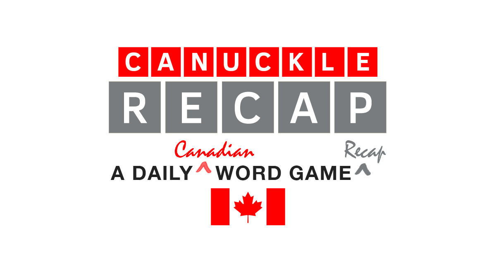
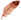

|  |
| We are proud of what we have been able to create, and looking back at all the words makes us proud to be Canadian! We hope you've enjoyed playing this game as much as we've had creating it. You can support Canada's daily word game by buying the Canuckle creators a coffee! ☕️🍁👍 Here's a recap of all the Canuckle words all the way back puzzle #1: (Click on column headers to toggle the sort, or view just the words) |
| # | DATE | WORD | AVG | FUN FACT | LINK |
|---|---|---|---|---|---|
| 1 | Feb 10, 2022 | CANOE 🛶 |
- | In Canada, the canoe has long been associated with the fur trade and the romantic figure of the voyageur. | |
| 2 | Feb 11, 2022 | MAPLE 🍁 |
- | The maple leaf is one of the most recognizable symbols of Canada and is featured on the national flag. | |
| 3 | Feb 12, 2022 | INUIT 😊 |
- | Inuit live throughout most of Northern Canada in the territory of Nunavut. | |
| 4 | Feb 13, 2022 | PLAID 🟥⬛️ |
- | The official tartan for Canada as a whole is known as the Maple leaf tartan. | |
| 5 | Feb 14, 2022 | IGLOO ❄️ |
- | Igloo comes from the Inkuktitut word “iglu” meaning house. | |
| 6 | Feb 15, 2022 | HOSER 😆 |
- | Hoser is a slang word for a Canadian of limited intelligence. | |
| 7 | Feb 16, 2022 | SYRUP 🥞 |
- | Canada produces 71% of the world's maple syrup, 91% of it coming from Quebec. | |
| 8 | Feb 17, 2022 | BACON 🥓 |
- | Canadian bacon comes from the loin of the pig instead of the side or belly. | |
| 9 | Feb 18, 2022 | SORRY 🙇 |
- | Canadians apologize so much, Canada passed the Apology Act in 2009. | |
| 10 | Feb 19, 2022 | WHALE 🐳 |
- | There are more than 33 species of whale that live in Canada's oceans. | |
| 11 | Feb 20, 2022 | NORTH 🧭 |
- | One of Canada's most famous nicknames is the Great White North. | |
| 12 | Feb 21, 2022 | ABOOT 🥾 |
- | This word is a humorous (though incorrect) take on the Canadian accent saying the word “about”. | |
| 13 | Feb 22, 2022 | BANFF 🏞️ |
- | Banff was declared a UNESCO World Heritage Site in 1984. | |
| 14 | Feb 23, 2022 | FALLS 💦 |
- | About 28 million litres of water travel down Niagara Falls every second. | |
| 15 | Feb 24, 2022 | TOTEM 🗿 |
- | The word totem comes from the Algonquian word “odoodem“ meaning “his kinship group“. | |
| 16 | Feb 25, 2022 | QUEEN 👸 |
- | Queen Elizabeth II has been Canada's monarch for over 70 years. | |
| 17 | Feb 26, 2022 | LOONS 🦆 |
- | Loons have beautiful, crimson red eyes, but this is only during mating season. | |
| 18 | Feb 27, 2022 | METIS |
- | The Métis invented the york boat, used by the Hudson's Bay Company to carry furs and trade goods along waterways. | |
| 19 | Feb 28, 2022 | TOQUE 🧶🧢 |
- | Toque (or tuque) is the official name for a winter hat in Canada! | |
| 20 | Mar 1, 2022 | CANAL 🚤⛸️ |
- | The 202 km of Rideau Canal with 47 locks is the oldest, continuously operated canal system in North America. | |
| 21 | Mar 2, 2022 | CRUDE 🛢️ |
- | Canada has the 3rd largest oil reserves in the world and is the 4th largest oil producer and exporter. | |
| 22 | Mar 3, 2022 | GOOSE 🦢 |
- | A subspecies known as “giant” Canada geese are the largest geese in the world. | |
| 23 | Mar 4, 2022 | LAKES 🌅 |
- | Canada has more lakes than the rest of the world combined! Almost 9% of Canada's total surface area is covered by freshwater. | |
| 24 | Mar 5, 2022 | CROWN 👑 |
- | As of 2019, there were 47 Crown corporations in Canada, including CBC, Canada Post, VIA Rail, the Royal Canadian Mint, and the Bank of Canada. | |
| 25 | Mar 6, 2022 | SPUDS 🥔 |
- | PEI produces more potatoes for Canada than any other province and produces 2.5 billion lbs per year! | |
| 26 | Mar 7, 2022 | ROOTS |
- | Roots Canada opened its first store in 1973 selling footwear, and started using the beaver logo in 1985 with the launch of their athletic brand. | |
| 27 | Mar 8, 2022 | SNOWY 🌨️ |
- | On February 10, 1999, Tahtsa Lake, British Columbia got hit with 145 cm (4'9") of snow in ONE day! | |
| 28 | Mar 9, 2022 | YUKON 🏔️ |
- | Yukon is home to Mount Logan, Canada's tallest mountain (5959 m) and the 2nd highest peak in North America. | |
| 29 | Mar 10, 2022 | POLAR |
- | Canada is home to about 16,000 polar bears, which is approximately two-thirds of the world's total estimated population. | |
| 30 | Mar 11, 2022 | BISON |
- | Bison are North America's largest land animal, with bulls weighing up to 2000 lbs and cows up to 1000 lbs. | |
| 31 | Mar 12, 2022 | TOWER 🗼 |
- | Toronto's CN Tower held the record for the world's tallest free-standing structure for 32 years, from 1975 until 2007. | |
| 32 | Mar 13, 2022 | BEARS 🐻 |
- | Roughly half of the world's Grizzly Bears (a Brown Bear subspecies) live in Canada, mostly in BC. | |
| 33 | Mar 14, 2022 | LEAFS 🏒🍁 |
- | One of the NHL's founding teams, the Toronto Maple Leafs have won 13 Stanley Cups, the most recent being in 1967. | |
| 34 | Mar 15, 2022 | WHEAT 🌾 |
- | Close to half of all Canadian wheat is grown in Saskatchewan, followed by Alberta and Manitoba. | |
| 35 | Mar 16, 2022 | PARKS 🏞️🏕️ |
- | There’s a whopping 48 National Parks and over one thousand Provincial and Territorial parks in the Great White North! | |
| 36 | Mar 17, 2022 | KAYAK 🚣 |
- | Kayaks were originally designed for hunting and fishing. In fact, the word kayak means “hunter's boat”, and came from “qajaq” or “qayarq”, a Greenlandic Inuit word. | |
| 37 | Mar 18, 2022 | MOOSE 🦌 |
- | The moose is the largest species of deer in the world. The average weight of a fully grown male moose (a bull) is 1500 lbs! | |
| 38 | Mar 19, 2022 | PRIDE 🏳️🌈 |
- | Since 2016, the month of June has been declared Pride Month in Canada to celebrate the LGBTQ2+ community. | |
| 39 | Mar 20, 2022 | ROCKY ⛰️ |
- | The Rocky Mountains, also known as the Rockies, are the largest mountain system in North America! | |
| 40 | Mar 21, 2022 | SCOFF 🥘 |
- | Scoff is Newfoundland slang for a big feed, typically Jiggs dinner but could be any large, satisfying meal. | |
| 41 | Mar 22, 2022 | CABIN |
- | Cabin is another name for a cottage, and Canada has no shortage of weekend getaway spots! | |
| 42 | Mar 23, 2022 | BEERS 🍻 |
- | Canadians spent $9.2 billion on beer in 2020 ($325 per adult), which equates to 2.3 billion litres of beer. | |
| 43 | Mar 24, 2022 | PARKA |
- | Originally created by the Inuit to keep warm in the Canadian Arctic, the first parkas were made from whale, seal or caribou skin and often coated with fish oil for waterproofing. | |
| 44 | Mar 25, 2022 | RINKS 🏒⛸️🥌 |
- | In the 2020/21 season, there were 2,860 indoor and 5,000 outdoor ice hockey rinks located in Canada according to the International Ice Hockey Federation. | |
| 45 | Mar 26, 2022 | FRIES 🍟 |
- | Canadians consumed over 240,000 metric tonnes of frozen fries in 2019. | |
| 46 | Mar 27, 2022 | COAST 🌊 |
- | Canada has the longest coastline in the world, measuring 243,042 km! | |
| 47 | Mar 28, 2022 | ORDER 🎖️ |
- | The Order of Canada is how our country honours people who make extraordinary contributions to the nation. | |
| 48 | Mar 29, 2022 | PHONE 📞 |
- | In 1876, Scottish-born inventor Alexander Graham Bell patented the first practical telephone, a concept that he conceived in Brantford, Ontario. | |
| 49 | Mar 30, 2022 | BIRCH 🌳 |
- | The white birch is the most widely distributed of native birch trees, and grows in every region of Canada. The bark has long been used for making canoes and ornaments. | |
| 50 | Mar 31, 2022 | PORTS ⚓️ |
- | Canada is home to numerous ports, but the Port of Vancouver is Canada's largest port, and is the most diversified port in North America. | |
| 51 | Apr 1, 2022 | DAIRY 🥛🐄🧀 |
4.09 | The Dairy Farmers of Canada logo guarantees a product is made with 100% Canadian milk and milk ingredients, and is free of antibiotics. | |
| 52 | Apr 2, 2022 | SKATE ⛸️ |
3.93 | Skate Canada is the oldest and largest figure skating organization in the world. | |
| 53 | Apr 3, 2022 | FARMS |
4.52 | In 2020, roughly 1 out of every 9 Canadian jobs was in the agriculture and agri-food sector. | |
| 54 | Apr 4, 2022 | RIVER 🏞️💦 |
5.08 | Annually, Canada’s Rivers discharge 7% of the world’s renewable water supply at a flow rate per second more than four times that of Niagara Falls. | |
| 55 | Apr 5, 2022 | SPORT 🏒🥍 |
3.74 | Canada's official national sports are ice hockey (winter) and lacrosse (summer). | |
| 56 | Apr 6, 2022 | GLOBE 🌐📰 |
4.34 | The Globe and Mail newspaper originated from two competing newspapers, “The Globe” and “The Mail and Empire”. | |
| 57 | Apr 7, 2022 | CURDS 🧀 |
4.52 | Poutine (fries topped with cheese curds and gravy) is popular all over Canada and as such it is considered the country's national dish. | |
| 58 | Apr 8, 2022 | FOXES 🦊 |
5.80 | Four species of foxes live in Canada: arctic, swift, grey, and red being the most common. The grey fox is one of only 2 members of the dog family that can climb trees. | |
| 59 | Apr 9, 2022 | CROPS 🌱 |
4.09 | Canada is the world’s largest grower and exporter of flax seed, canola, oats, mustard seeds, pulses (peas, beans, and lentils) and durum wheat. | |
| 60 | Apr 10, 2022 | CAMPS 🏕️ |
4.12 | Over 5.7 million Canadian adults camp each year and the camping industry contributes a total of $4.7 billion annually to Canada's economy. | |
| 61 | Apr 11, 2022 | RODEO 🤠 |
4.45 | The Calgary Stampede, Canada's largest rodeo, is billed as “The Greatest Outdoor Show on Earth”. It is held every July and turns 110 years old in 2022. | |
| 62 | Apr 12, 2022 | TRADE |
3.64 | Canada’s three biggest trading partners are the United States, the European Union and China. Goods and services trade with the US totaled over $800 billion in 2021. | |
| 63 | Apr 13, 2022 | PEACE ☮️ |
4.07 | Canada consistently ranks in the top 10 most peaceful countries in the world according to the Global Peace Index (GPI). The Peace Tower also forms the centrepiece of the Canadian parliament buildings. | |
| 64 | Apr 14, 2022 | MINES 💎 |
4.44 | In 2020, Canada produced 60 minerals and metals at almost 200 mines, and the value of Canada's mineral production reached $43.8 billion. | |
| 65 | Apr 15, 2022 | SHORE 🌊🏝️ |
3.73 | The shores of Canada's 52,455 islands are a big part of what makes the country's coastline the longest in the world. | |
| 66 | Apr 16, 2022 | CEDAR 🌲 |
4.00 | Canada has the world’s largest stock of standing western redcedar trees. The western redcedar is the arboreal emblem of the province of British Columbia. | |
| 67 | Apr 17, 2022 | LARGE |
4.24 | With a landmass of almost 10 million square kilometres, Canada is the second-largest country in the world. | |
| 68 | Apr 18, 2022 | BRIER 🥌 |
4.89 | The Brier is the annual Canadian men's curling championship that has been held since 1927. Team Gushue won the 2022 Brier, their fourth championship in six years. | |
| 69 | Apr 19, 2022 | TIDES 🌊🌜 |
4.30 | The highest tides in the world can be found in Canada at the Bay of Fundy, which separates New Brunswick from Nova Scotia. | |
| 70 | Apr 20, 2022 | KLICK 🛣️🚗 |
5.56 | A klick is a military term used to denote a distance of one kilometre. It is commonly used in Canada when referring to distance or speed. | |
| 71 | Apr 21, 2022 | DENIM 👖 |
4.28 | The Canadian Tuxedo is an outfit consisting of a denim jacket or jean shirt worn with denim jeans, or denim-on-denim. The term originated in 1951 after Bing Crosby was refused entry to a Vancouver hotel wearing double denim. | |
| 72 | Apr 22, 2022 | SHIPS ⛵ |
4.24 | The most famous ship in Canadian history, the Bluenose, was both a fishing and racing vessel in the 1920s and 1930s. The Nova Scotia schooner achieved immortality when its image was engraved onto the Canadian dime. | |
| 73 | Apr 23, 2022 | POPPY 🌺 |
5.27 | From the last Friday in October to Remembrance Day, millions of Canadians wear a poppy as a visual pledge to never forget those who sacrificed for our freedom. | |
| 74 | Apr 24, 2022 | COURT |
3.78 | The Supreme Court of Canada is the highest court in the judicial system of Canada. It comprises nine justices, whose decisions are the ultimate application of Canadian law. | |
| 75 | Apr 25, 2022 | LODGE |
4.48 | A beaver home is called a lodge. Beavers live in wetland habitats along lakes and rivers and are some of the best architects in the wild. Some even call them the original Canadian lumberjacks! | |
| 76 | Apr 26, 2022 | OCEAN 🌊🌎 |
4.04 | With marine waters spanning its west, north, and east coasts, Canada is an ocean nation. Canadians are influenced in many ways by the Pacific, Arctic, and Atlantic Oceans. Celebrate World Oceans Day on June 8th! | |
| 77 | Apr 27, 2022 | RUGBY 🏉 |
4.59 | Buoyed by its inclusion in the 2016 Olympic Games, Rugby is one of the fastest growing team sports in Canada, particularly in youth and women. | |
| 78 | Apr 28, 2022 | METRE 📏 |
4.43 | Canada officially uses the metric system of measurement, and metre is the standard spelling of the metric unit for length. | |
| 79 | Apr 29, 2022 | ELDER 🧓 |
4.89 | Elders are respected individuals who play key roles in Indigenous communities. They are important knowledge keepers, and they also help to ensure cultural continuity. | |
| 80 | Apr 30, 2022 | SPACE |
3.93 | Canada's contributions to space exploration include one of Canada’s most celebrated and iconic technological advances: The Canadarm - a remote-controlled robotic arm used to help build and maintain the International Space Station (ISS). | |
| 81 | May 1, 2022 | HORSE 🐴 |
3.88 | On April 30, 2002, a bill was passed into law by the Canadian Government making the Canadian horse an official symbol of Canada. The Canadian horse is known for its great strength and endurance, resilience, intelligence and good temper. | |
| 82 | May 2, 2022 | FOGGY 🌫️ |
4.79 | Newfoundland, Canada is widely considered one of the foggiest places on Earth. On average, Newfoundland experiences over 200 foggy days every year. | |
| 83 | May 3, 2022 | TAXES 💰 |
5.55 | Lottery & gambling winnings in Canada are treated as windfalls and are not subject to Canadian income tax. Turns out taxes aren't always certain after all! | |
| 84 | May 4, 2022 | TRAIN 🚂 |
2.67 | Canada has a large and well-developed railway system that includes transcontinental freight train services by Canadian National (CN) and Canadian Pacific (CP), and nationwide passenger train services by Via Rail. | |
| 85 | May 5, 2022 | MUSIC 🎵 |
4.06 | The Canadian music industry is the sixth-largest in the world, producing internationally renowned composers, musicians and ensembles. O Canada! | |
| 86 | May 6, 2022 | MITTS 🥊 |
4.85 | Celebrated annually on November 21st, National Red Mitten Day encourages Canadians to display their patriotism in support of Canadian athletes! Red mittens represent the pride, generosity, and excellence of every Canadian. | |
| 87 | May 7, 2022 | GRAIN |
4.00 | The grain sector is a key driver of Canada's economic growth, exporting 26.4 million tonnes of wheat in 2020-21 and over $25 billion in exports sales. | |
| 88 | May 8, 2022 | ROUGE |
4.21 | In the Canadian Football League (CFL), a rouge is a one-point score that is awarded for certain plays that involve the ball being kicked into the end zone. The rouge is uniquely Canadian! | |
| 89 | May 9, 2022 | TULIP 🌷 |
3.84 | The Canadian Tulip Festival in Ottawa features 100 tulip varieties with more than one million blooms over 14,000 m². The celebration is a symbol of friendship between Canada and the Netherlands, with 20,000 bulbs being gifted by the Netherlands each year. | |
| 90 | May 10, 2022 | WINES 🍷 |
5.06 | Canadians drink more than 1 billion glasses of Canadian wine every year. Because of our cold climate, Canada is the largest Icewine producer in the world. | |
| 91 | May 11, 2022 | SERGE |
4.76 | The Royal Canadian Mounted Police, or “Mounties,” are known for their iconic uniforms that feature the iconic scarlet tunic called a red serge. | |
| 92 | May 12, 2022 | RURAL |
4.82 | The Prairie provinces of Alberta, Saskatchewan, and Manitoba are known for being the most rural parts of Canada. Much of the Prairies' population is descended from 19th century farmer-settlers. The percentage of Canadians living in rural areas has gone from 87% in 1851 to 17.8% in 2021. | |
| 93 | May 13, 2022 | TROOP |
3.99 | The Canadian Armed Forces has personnel deployed across Canada and around the world. Since 1947, Canadian troops have completed 72 international missions. | |
| 94 | May 14, 2022 | JUNOS |
5.06 | The Juno Awards celebrate the best in Canadian music! Anne Murray has won the most Junos with 25 wins (52 nominations), followed by Bryan Adams (21 wins, 63 nominations) and Celine Dion (20 wins, 75 nominations). | |
| 95 | May 15, 2022 | TRACK |
3.63 | Canada's best summer Olympic sport is athletics, which includes running, hurdles, long jump, high jump, decathlon and other track & field events. Canada has earned 66 medals in athletics since 1900, including 16 gold, 17 silver and 33 bronze. | |
| 96 | May 16, 2022 | SUNNY ☀️ |
4.08 | Canada’s North is particularly well-known as being the fabled “land of the midnight sun.” Due to its proximity to the Arctic Circle, northern days can entail up to 24 straight hours of sunlight in the summer. Calgary is the sunniest of Canada's large cities, enjoying an average of 2,400 hours of bright sun each year, spread over 333 days. | |
| 97 | May 17, 2022 | ZONES 🕗 |
5.73 | There are six time zones in Canada covering four and a half hours. From west to east these time zones are: Pacific, Mountain, Central, Eastern, Atlantic and Newfoundland. Canada's Sir Sandford Fleming developed the modern system of standard time and time zones, still in use today. | |
| 98 | May 18, 2022 | BEACH 🏖️ |
3.90 | Canada is home to the two longest freshwater beaches in the world: Wasaga Beach (14 km) on the Georgian Bay in Ontario and Sauble Beach (11 km) on the Bruce Peninsula, along the eastern shore of Lake Huron. | |
| 99 | May 19, 2022 | SKIER ⛷️ |
4.53 | Approximately 275 Canadian ski areas see more than 19 million visits per season. Canadian skiers and snowboarders (an estimated number of 2.5 million) are on the slopes and trails an average of 7.5 days per year. | |
| 100 | May 20, 2022 | GUARD 💂 |
4.30 | The Ceremonial Guard is an ad hoc military unit in the Canadian Armed Forces that performs the Changing the Guard ceremony on Parliament Hill and posts sentries at Rideau Hall. We stand on guard for thee! | |
| 101 | May 21, 2022 | EXPOS ⚾️ |
4.88 | The Montreal Expos, named after the Expo 67 World's Fair, were the first Major League Baseball franchise located outside the USA, competing from 1969 until 2004. The last World's Fair held in Canada was Expo 86 in Vancouver. | |
| 102 | May 22, 2022 | HYDRO ⚡️💧🏭 |
4.47 | Waterpower is Canada's most abundant source of clean and renewable electricity, providing more than 60% of Canada's total electricity today. Canada is the fourth largest generator of hydroelectricity in the world. | |
| 103 | May 23, 2022 | TRAIL 🥾 |
3.61 | The Trans Canada Trail is Canada’s national trail and is the longest network of multi-use recreational trails in the world. Crossing Canada on the Trans Canada Trail by foot would take over two years, spanning a whopping 24,134 km! | |
| 104 | May 24, 2022 | DUCKS 🦆 |
4.33 | With roughly 22 different species of duck found in Canada, the most common is the Mallard. Saskatchewan is renowned for having some of the most abundant and productive waterfowl habitat in North America. Check out Ducks Unlimited Canada and how they are working to conserve, restore and manage Canadian wetlands. | |
| 105 | May 25, 2022 | WATER 💧 |
4.32 | With around 80,423 cubic metres per capita, Canada has about 9% of the world's total renewable fresh water supply. When glacier, underground and lake water is included, Canada actually has 20% of the world's fresh water supply. | |
| 106 | May 26, 2022 | BOOTS 👢 |
4.66 | Rain boots, winter boots, cowboy boots, hiking boots, ski/snowboard/snowmobile boots - there is no shortage of boots for Canadians to wear! DYK: The brown leather riding boots worn by the RCMP need to be shined for a minimum of 25 hours before they have the appropriate sheen to them! | |
| 107 | May 27, 2022 | TARTS 🥧 |
5.04 | A butter tart is a delicious pastry tart, which generally consists of butter, sugar, syrup, and egg, filled into a flaky pastry. The earliest published recipe for a butter tart is from Barrie, Ontario dating back to 1900 in the Women's Auxiliary of the Royal Victoria Hospital Cookbook. | |
| 108 | May 28, 2022 | APPLE 🍎 |
3.76 | The McIntosh (nicknamed the “Mac”) is the national apple of Canada. John McIntosh discovered the original McIntosh sapling on his Dundela farm in Upper Canada in 1811. Many years later, Apple Inc. named the Macintosh computer line after the fruit. | |
| 109 | May 29, 2022 | HOOPS 🏀 |
4.85 | Invented by Canadian James Naismith in 1891 while he was teaching at the YMCA in Springfield, Massachusetts, basketball is now one of the most popular sports in the world. The first game used a soccer ball and peach baskets as hoops, which gave the sport its name. Basketball was born! | |
| 110 | May 30, 2022 | TAIGA 🌲❄️🌳 |
5.33 | The taiga or boreal forest has been called the world's largest land biome. In North America the taiga occupies much of Canada and Alaska. At 1.3 billion acres, the Canadian Boreal Forest is one of the largest intact forest and wetland ecosystems remaining on earth. | |
| 111 | May 31, 2022 | STEEL 🏗️ |
4.06 | Steel plays an extremely important role in the Canadian economy as a whole: in 2019, the Canadian steel industry contributed $4.2 billion to Canada's GDP. According to the Canadian Steel Producers Association, the Canadian steel industry employs, directly and indirectly, more than 120,000 Canadians. | |
| 112 | Jun 1, 2022 | GAMES 🏅 |
4.61 | The Canada Games is a multi-sport event held every two years, alternating between the Canada Winter Games and the Canada Summer Games. They represent the highest level of national competition for Canadian athletes. The Niagara 2022 Canada Summer Games will take place Aug 6-21, 2022! | |
| 113 | Jun 2, 2022 | ELECT 🗳️ |
4.34 | Canada is a representative democracy. During an election, all Canadian citizens who are at least 18 years old on election day can vote in their electoral district. | |
| 114 | Jun 3, 2022 | TREES 🌳🏞️🌲 |
3.69 | One of the most widely-known facts about Canada is that we’ve got an abundance of trees, but did you know that Canada actually boasts 30 per cent of the world’s boreal forest and 10 per cent of the world’s total forest cover? | |
| 115 | Jun 4, 2022 | FIELD 🏑🌾🛢️ |
4.25 | There are so many different types of fields in Canada: sports fields, wheat fields, oil fields, and ice fields to name a few. The Canadian Prairies are known for their open skies and vast fields of grain, but Canada is also home to the world's largest non-polar ice field in the St. Elias Mountains located in Kluane National Park and Reserve, Yukon Territory. | |
| 116 | Jun 5, 2022 | PRIME |
4.07 | The Prime Minister (PM) is the head of the federal government in Canada. It is the most powerful position in Canadian politics. While the Queen may be Canada's head of state, and the Governor General the Queen's representative, it's the Prime Minister who is known as the nation's head of government. | |
| 117 | Jun 6, 2022 | CHIPS 🥔🍅🍠 |
3.97 | Canadians love their potato chips! In 2020, the Canadian potato chips market had total revenues of almost $2 billion. Canada is also home to some truly Canadian original flavours - both Ketchup and All Dressed chips are almost exclusively available in Canada! | |
| 118 | Jun 7, 2022 | PAGER 📟 |
5.01 | The telephone pager was invented in 1949 by Canadian Alfred J. Gross, a Toronto-based wireless communications pioneer. The devices Alfred invented also led to cordless and cellular telephone technology. | |
| 119 | Jun 8, 2022 | DONUT 🍩 |
3.72 | Canada has the most donut shops and consumes the most donuts per capita of any other country in the world - around 1 billion annually! The donut-eating capital of Canada is Lloydminster, Alberta/Saskatchewan. National Donut Day was last Friday, June 3rd - we hope you celebrated with your favourite donut! In Canada, the preferred spelling is “doughnut”, but most dictionaries list “donut” as an acceptable variant. We wanted to include it in the game since the doughnut/donut is considered by some as Canada's unofficial national sugary snack! 🍩🍁" |
|
| 120 | Jun 9, 2022 | SCREW |
4.73 | In 1907, Canadian Peter L. Robertson invented a square socket-head screw. He produced his screws in his Milton, Ontario, factory starting in 1908. At that time, it was a revolutionary change in the fastener industry. Robertson screws and screwdrivers carry his name to this day. | |
| 121 | Jun 10, 2022 | CHIEF  |
4.13 | In many Indigenous cultures in Canada, chiefs are the leaders of bands, clans and/or First Nations. Chiefs act as cultural and spiritual leaders and also serve as links between their people and the municipal, provincial and federal governments. RoseAnne Archibald is the current National Chief of the Assembly of First Nations (AFN) in Canada. | |
| 122 | Jun 11, 2022 | PEAKS |
4.35 | Canada’s Yukon Territory is home to 8 of Canada’s tallest mountains, with Mount Logan topping them all at 5956m high. BC’s Snow Dome peak is a unique “three-ocean peak”, where if you poured a cup of water at the summit, the water could flow into the Pacific Ocean to the west, the Arctic Ocean to the north, or the Atlantic Ocean to the east. | |
| 123 | Jun 12, 2022 | ARENA |
3.91 | The largest indoor arena in Canada is the Montreal Canadiens’ Bell Centre with a capacity of 21,700. The largest open air stadium is Edmonton’s Commonwealth Stadium, home to CFL’s Edmonton Elks, able to hold 56,302. | |
| 124 | Jun 13, 2022 | SLEDS 🛷 |
4.32 | “Toboggan” is from the Mi'kmaq word “tobakun,” which means sled. In fact, the Inuit made the first toboggans out of whale bone and used it to transport people and belongings across the snowy tundra. Guy Martin holds the world record for fastest speed on a gravity powered snow sled at over 134 km/h in 2014! | |
| 125 | Jun 14, 2022 | HOUSE 🏛️ |
3.87 | The House of Commons of Canada is a democratically elected body whose members are known as members of Parliament (MPs). It is the lower house of the Parliament of Canada (the Senate is the upper house) and provides a link between Canadians and their Parliament. Many laws in Canada first begin as bills in the House of Commons. | |
| 126 | Jun 15, 2022 | BAGEL 🥯 |
4.64 | The Montréal bagel is one of Canada's most iconic and coveted snacks. It is a distinctive variety of handmade bagel that traditionally has a prounounced sweet taste and a chewy and dense texture, and is always baked in a wood-fired oven. The bagel first arrived in Montréal with the wave of Jewish immigrants from Eastern Europe in the early 1900s. | |
| 127 | Jun 16, 2022 | FORCE |
4.24 | The Canadian Armed Forces is the unified military of Canada, including sea, land, and air elements referred to as the Royal Canadian Navy, Canadian Army, and Royal Canadian Air Force. June 5th was Canadian Armed Forces Day - a day to honour and recognize members of the Canadian Armed Forces who display unwavering courage, sacrifice, and selflessness every day they wear the uniform. | |
| 128 | Jun 17, 2022 | ROWER |
5.47 | A total of 43 Olympic medals (including 10 gold medals) have been won by Canadian rowers, making rowing Canada's third-most successful summer Olympic sport (behind athletics and swimming). | |
| 129 | Jun 18, 2022 | RADIO 📻 |
3.75 | Canadian inventor Reginald A. Fessenden is best known for his pioneering work developing radio technology, including the foundations of amplitude modulation (AM) radio. On 23 December 1900, he was the first person to send audio (wireless telephony) by means of electromagnetic waves, successfully transmitting speech by radio over a distance of about a 1.6 kilometres. | |
| 130 | Jun 19, 2022 | LITRE ⛽ |
4.07 | Canada officially uses the metric system of measurement, and litre is the standard spelling of the metric unit for liquid volume. Canadians purchase gasoline in litres, and also buy milk by the litre (in bags in parts of Ontario, Quebec, and the Maritimes!). | |
| 131 | Jun 20, 2022 | ROYAL 👑🦁🦄 |
4.13 | Canada is one of the oldest continuing monarchies in the world. The title “Royal” is a sign of honour and distinction, and the granting of this distinction is a prerogative of the Sovereign. In Canada, we have the Royal Canadian Navy, the Royal Canadian Air Force, the Royal Canadian Regiment in the Canadian Army, the Royal Canadian Mounted Police, the Royal Canadian Legion, the Royal College of Physicians and Surgeons of Canada, and the Royal Architectural Institute of Canada. In Canada's legislative process, a bill can only become law once it has received royal assent. | |
| 132 | Jun 21, 2022 | BEADS 📿 |
4.35 | Beading has a very long artistic and cultural history among the Indigenous people in Canada. At least 8,000 years before Europeans came to Canada, First Nations people were using beads in elaborate designs and for trade. Today, you can find beautiful First Nations beadwork at powwows, First Nations arts stores and museums across Canada. June 21st is National Indigenous Peoples Day. Take the opportunity to learn more about the cultural and linguistic diversity as well as the contributions of First Nations, Inuit and Métis Peoples. |
|
| 133 | Jun 22, 2022 | CLOCK 🕰️ |
3.91 | The first quartz clock was developed in 1927 by Canadian-born telecommunications engineer Warren Marrison. During the 1940s, time standard laboratories throughout the world switched from mechanical clocks to quartz, and the quartz revolution had begun thanks to Marrison. | |
| 134 | Jun 23, 2022 | TROUT 🐟 |
4.32 | With freshwater lakes, rivers and streams covering almost 9% of the country's total area, Canada is a haven for anglers. Canada is home to many different species of trout, including steelhead, rainbow trout, lake trout, brown trout, cutthroat trout and brook trout. Approximately 25% of the world's lake trout lakes are found in the province of Ontario. | |
| 135 | Jun 24, 2022 | STICK 🏒🥍🏑 |
3.87 | Hockey and Canada are synonymous with each other, and the sport remains integral to the country’s culture. Hockey sticks go back to the 1800’s where sticks were hand carved from a single piece of wood. The first commercial sticks were said to be created by the Mi’kmaq carvers in Nova Scotia and were made from birch and hornbeam trees. | |
| 136 | Jun 25, 2022 | DINOS 🦖🦴🦕 |
4.64 | Alberta is home to the richest source of dinosaur fossils in the world! The town of Drumheller in the heart of the Canadian Badlands is known as the “Dinosaur Capital of the World” and boasts the world's largest dinosaur, a T-Rex standing 25m tall. Just down the road in the Red Deer River valley you'll find Dinosaur Provincial Park, a UNESCO World Heritage site where 58 unique dinosaur species have been discovered. | |
| 137 | Jun 26, 2022 | STORM ⛈️ |
3.89 | Canada is as tall as it is wide, creating a wide range of climate conditions. From blistering cold winters to hot muggy summers; torrential rain, blinding snowstorms, deadly tornadoes and scorching drought, Canadians experience some of the planet's most diverse weather systems. Windsor, Ontario is the thunderstorm capital of Canada and has more lightning strikes than any other major city across the country. | |
| 138 | Jun 27, 2022 | PIZZA 🍕 |
4.87 | Pizza is one of the most popular foods in the world, and Canada is no exception. There is even “Canadian pizza” which typically includes tomato sauce, mozzarella cheese, bacon, pepperoni, and mushrooms. The country's biggest claim to pizza fame, however, is that the Hawaiian pizza was invented in Canada in 1962 by Sam Panopoulos, a native of Greece who was running a pizzeria in Chatham, Ontario. Pineapple pizza fans unite! 🍍🥓🍕 | |
| 139 | Jun 28, 2022 | TAFFY 🍭 |
4.55 | Maple taffy (tire d'érable or tire sur la neige in French-speaking Canada) is a sugar candy made by boiling maple sap past the point where it would form maple syrup, but not so long that it becomes maple butter or maple sugar. It is part of traditional culture in Québec, Eastern Ontario, New Brunswick, and Nova Scotia. In these regions, maple syrup is boiled, poured into rows on a snow-lined tray, and rolled onto sticks to make this chewy, irresistible candy. | |
| 140 | Jun 29, 2022 | GREAT 👍 |
3.77 | Although it is unknown who coined the term “Great White North” in reference to Canada, the nickname has been in use for many decades. “Great” because it’s the second largest country in the world. “White” because of the amount of Arctic frozen tundra and snow within the country. Finally, “North” because not only does Canada take up most of the northern half of North America, it also stretches nearly to the North Pole! Canada is also home to the Great Lakes, the largest group of freshwater lakes on Earth, as well as Great Bear Lake and Great Slave Lake in the Northwest Territories. | |
| 141 | Jun 30, 2022 | PUCKS 🏒🥅 |
4.18 | According to legend, the first hockey pucks used in early outdoor hockey games were pieces of frozen cow dung. Other early versions were made out of wood cut from the branches of trees. Sometimes even stones would suffice. Around 1875, rubber lacrosse balls were sliced in thirds and only the middle section was kept. Eventually, vulcanized rubber became the standard material used for hockey pucks. | |
| 142 | Jul 1, 2022 | PROUD |
3.47 | There is little doubt that Canada is one of the best places to live in the world, and there is a lot to be proud of in this amazing country! A few of the things that make us proud to call the Great White North home: universal health care, a rich ethnic diversity & inclusive culture, gorgeous scenery & landscapes, extraordinary wildlife, delicious food like poutine, butter tarts and maple syrup, real beer, and of course Canada's game, hockey! We feel a deep sense of pride towards this beautiful land and its inhabitants, and can proudly wear the maple leaf wherever we go. True north strong and free! 🍁 | |
| 143 | Oct 4, 2022 | SPIKE 🛤️ |
4.09 | The Last Spike was the final and ceremonial railway spike driven into the Canadian Pacific Railway (CPR) track by company director Donald Smith on the morning of 7 November 1885. Contemporaries and historians have viewed the Last Spike as a moment when national unity was realized. | - |
| 144 | Oct 5, 2022 | RIDGE |
4.09 | The Battle of Vimy Ridge, during the First World War, is Canada's most celebrated military victory — an often mythologized symbol of the birth of Canadian national pride and awareness. | - |
| 145 | Oct 6, 2022 | GEESE 🦢 |
4.32 | Although Canada has no official bird, the Canada Goose has long been a part of the national identity. Canada Geese are well known for flying in a distinctive V-shaped formation, their loud "honk" and their unmistakable looks. | - |
| 146 | Oct 7, 2022 | REIGN 👑 |
4.02 | The reign of Canada's new monarch, King Charles III, began when Queen Elizabeth II died on September 8. Queen Elizabeth II was Canada's monarch for over 70 years, making her the longest reigning monarch in Commonwealth history. | - |
| 147 | Oct 8, 2022 | UPPER |
4.58 | In Canadian history, Upper Canada (also called Canada West) was the region in Canada now known as Ontario. You can travel back in time to one of Canada's largest living-history sites and experience life in the 1860s at Upper Canada Village near Morrisburg, Ontario. | - |
| 148 | Oct 9, 2022 | PLAIN |
3.45 | In geography, a plain is a flat expanse of land that generally does not change much in elevation. The Canadian portion of the Great Plains is found in the Prairie Provinces, namely Alberta, Saskatchewan, and Manitoba. | - |
| 149 | Oct 10, 2022 | MONEY 💵 |
4.01 | People from around the world refer to Canadian Money as "rainbow money" or "Monopoly money" thanks to its bright colours and unique artwork. | - |
| 150 | Oct 11, 2022 | HURON 🌅 |
4.31 | With the longest shoreline of all of the Great Lakes, Lake Huron is one of the most unique lakes on Earth. It is the second largest of the Great Lakes, and the fourth largest lake in the world by surface area. The Huron Wendat are an Iroquoian-speaking nation in Canada, originally living along the St. Lawrence River and between Lake Huron and Lake Ontario. | - |
| 151 | Oct 12, 2022 | LAGER 🍺 |
4.84 | The top selling style of beer in Canada is, by far, the pale lager. December 10th is National Lager Day in Canada! | - |
| 152 | Oct 13, 2022 | DOMES 🏟️ |
4.71 | Canada is home to some famous domes, including Calgary's unmistakeable Saddledome, the SkyDome in Toronto, the Montreal Biodome, and BC's Snow Dome peak which is a "hydrological apex" (a single point where three different watersheds meet). | - |
| 153 | Oct 14, 2022 | SPILE |
4.98 | A spile is a tube mechanism that you tap into a tree to collect sap, which in turn can be evaporated and boiled for delicious maple syrup! | |
| 154 | Oct 15, 2022 | CANDY 🍬🍫🍭 |
3.90 | Did you know that Ganong candy company in St. Stephen, New Brunswick is Canada's oldest chocolate and candy company? Canada is also home to some unique sweet candy treats, like Smarties, Coffee Crisp, Caramilk, Aero, Crunchie, and Mackintosh's Toffee to name a few! | |
| 155 | Oct 16, 2022 | TONNE ⚖️ |
4.48 | Canada officially uses the metric system of measurement, and tonne is the standard spelling of the metric unit for weight. One tonne is equal to 1000kg, or the size of a fully grown bison! | - |
| 156 | Oct 17, 2022 | ROCKS |
4.19 | Canada is home to some stunning rock formations, including New Brunswick's Hopewell Rocks, Ontario's Flowerpot Rocks, the Hoodoos found in Alberta's Badlands, Balancing Rock in Nova Scotia, and Rocher Percé (Pierced Rock) in Quebec. | - |
| 157 | Oct 18, 2022 | QUILT |
4.56 | Quilts were extremely important to the early settlers of Canada, since they had no good way of heating or insulating their homes, especially at night. The first quilts arrived in Canada with immigrants to "New France" in the early 1600s. Today, the Canadian Quilters' Association celebrates quilting and Canadian quilters across the country. | - |
| 158 | Oct 19, 2022 | FLAME 🔥 |
4.12 | The Centennial Flame is a monument on Parliament Hill commemorating the 100th anniversary of the Canadian Confederation. It was first lit in January 1967 and burns atop a fountain that has a bronze shield with the coat of arms of a province or territory on each side. | - |
| 159 | Oct 20, 2022 | LARCH 🌲 |
4.51 | Larches are among the dominant plants in the boreal forests of Canada. Larches are the only Canadian deciduous conifers, turning golden and shedding all their leaves in fall. | - |
| 160 | Oct 21, 2022 | CREEK 📺🌹💲 |
4.33 | Having premiered on CBC in 2015, Schitt's Creek was Canada's best-kept sitcom secret. In its sixth and final season, the quirky and hilarious Canadian comedy Schitt's Creek pulled off a sweep, taking home seven primetime awards and nine Emmys in all. | |
| 161 | Oct 22, 2022 | ORCAS 🐋 |
4.11 | On the Pacific west coast, the Johnstone Strait, between Vancouver Island and the British Columbian mainland, is one of the best places in the world to see orcas. From late June to October this spot is home to nearly 300 of these majestic, playful creatures. | - |
| 162 | Oct 23, 2022 | SEVEN |
4.46 | The Group of Seven was a group of painters from 1920 to 1933, best known for their paintings inspired by the Canadian landscape that initiated the first major Canadian national art movement. | - |
| 163 | Oct 24, 2022 | VOTER 🗳️ |
4.50 | Canadian citizens who are at least 18 years old on election day can vote in their electoral district in municipal, provincial/territorial, and federal elections. Did you know that on the day of a federal election, Elections Canada becomes the largest employer in the country? The agency hires about 250,000 people in communities across Canada. | |
| 164 | Oct 25, 2022 | BASIN 💧🏞️ |
4.02 | Canada is home to numerous basins, including Canada Basin in the Arctic, Basin Head Beach in Prince Edward Island, the Sudbury Basin in Ontario, and the Western Canada Sedimentary Basin which underlies 1.4 million square kilometres across Manitoba, Saskatchewan, Alberta, and British Columbia. | - |
| 165 | Oct 26, 2022 | WALLS 🧱🏰 |
5.55 | The only fortified city north of Mexico, one cannot visit Québec City without admiring the fortified walls and ramparts which were the city's defensive system built between 1608 and 1871. | - |
| 166 | Oct 27, 2022 | PLANE ✈️ |
3.58 | Aviation is an integral part of the Canadian economy. In 2018, the air transport industry, including airlines, and its supply chain, supported over $50 billion of GDP in Canada. | - |
| 167 | Oct 28, 2022 | GRAVY 🥣 |
4.71 | You can't have Canada's national dish without gravy! Poutine (aka "Canadian Salad") is the quintessential Canadian snack of fries and cheese curds covered in gravy. | - |
| 168 | Oct 29, 2022 | PINGO 🌄 |
5.27 | Pingos are impressive ice-cored hills found in the Arctic and Subarctic. "Pingo" is Inuvialuit for small hill. The Mackenzie Delta in the Northwest Territories has the highest concentration of pingos on Earth, approximately 1,350 of them. Pingos can be as big as a football stadium, up to 70 metres tall, with a circumference exceeding half a kilometre. | - |
| 169 | Oct 30, 2022 | BILLS 📜 |
4.50 | In Canada, law-making is one of the most significant responsibilities of Parliament. A bill is a proposed law that is introduced in either the House of Commons or the Senate. A bill can become law only once the same text has been approved by both Houses of Parliament and has received royal assent. | - |
| 170 | Oct 31, 2022 | RAVEN ⬛️🐦 |
4.35 | The raven is of high importance to Indigenous Peoples throughout Canada, appearing in myths, legends, art and traditions. It is particularly important to Aboriginal people of the British Columbia coast, where it symbolizes creation, knowledge and prestige. The raven was adopted as the Yukon's official bird in 1985. | - |
| 171 | Nov 1, 2022 | BRAIN 🧠 |
4.12 | Canada's neuroscience and mental health researchers are among the most productive and influential in the world. Canada is among the world's five most active countries in neuroscience. Canadian researchers have contributed to major scientific advancements in brain research that have furthered the field both nationally and internationally. Brain Canada plays an invaluable, critical role in this success. | |
| 172 | Nov 2, 2022 | POINT 👉 |
3.67 | Point Pelee is the southernmost point of mainland Canada, and is an important rest stop for migrating birds. Point Pelee National Park is Canada's second smallest but most ecologically diverse national park, and is home to more than 390 bird species and 70 species of trees, some of which are species at risk. | - |
| 173 | Nov 3, 2022 | ROPER |
5.08 | A roper is a person who uses a lasso to catch an animal, especially in a rodeo. The Calgary Stampede features the best riders, racers and ropers each year! | - |
| 174 | Nov 4, 2022 | SEALS |
4.37 | Seals are found in the waters of all three Canadian oceans: harbour in both Pacific and Atlantic; bearded and ringed in the Arctic; harp and hooded in the North Atlantic and parts of the Arctic; and grey in Atlantic Canada. | - |
| 175 | Nov 5, 2022 | FLEET |
3.96 | The Royal Canadian Navy's (RCN) fleet is made up of numerous classes of ships, submarines and other support vessels, as well as specialized units that allow Canada to maintain one of the most active blue-water navies in the world. The Royal Canadian Air Force (RCAF) aircraft fleet ranges from huge transport aircraft to helicopters to fighters to patrol aircraft and more. They are used to carry out a multitude of roles at home and abroad, in peace and in conflict, all in support of the RCAF's mission of providing relevant, responsive and effective air power to meet the defence challenges of today and into the future. November 5 to 11 is Veterans' Week, an opportunity for Canadians to honour the extraordinary efforts and sacrifices of our veterans. Thank you for your service! |
- |
| 176 | Nov 6, 2022 | SMART 🤓 |
3.73 | Canada is the most educated country globally, with over 56% of adults meeting the OECD criteria of residents aged 25 to 64 who have completed some form of tertiary education. | - |
| 177 | Nov 7, 2022 | CELLS 🧬 |
5.10 | Stem cells were first discovered by Canadians Dr. James Till and Dr. Ernest McCulloch who were both pioneers in biomedical research. Stem cells can self-renew and can be artificially grown, leading to all kinds of possibilities for the cure of disease and the rebuilding of tissue. Till and McCulloch were jointly nominated and inducted into the Canadian Medical Hall of Fame. | - |
| 178 | Nov 8, 2022 | SHEEP 🐑 |
4.02 | There are approx 1 million sheep in Canada on about 11,000 farms. The most popular breeds in Canada are the Suffolk, Dorset and Rideau Arcott. The Canadian Cooperative Wool Growers (CCWG) grades close to 1,400 tonnes of raw wool each year and sells most of it to the USA and the UK. | - |
| 179 | Nov 9, 2022 | PIANO 🎹 |
3.68 | Canada has a storied piano making past, and was home to more than 100 piano manufacturing companies during the peak era of the industry. Piano building in Canada began in the early 19th century and grew into a major, thriving industry between 1890 and 1925. Many Canadians have become noted pianists. Glenn Gould is a bona fide Canadian icon who became one of the most famous and celebrated classical pianists of the 20th century, while Oscar Peterson has had an equally influential role in jazz piano and is considered one of the greatest jazz pianists of all time. Other notable Canadian pianists include Angela Hewitt, Chantal Kreviazuk, Diana Krall, Marc-André Hamelin, Anton Kuerti, Charles Richard-Hamelin, and Jan Lisiecki. |
|
| 180 | Nov 10, 2022 | FERRY ⛴️ |
5.10 | Canada is home to over 180 different ferry routes with a route presently operating in each province and the majority of the territories. Transportation through waterways has always been a crucial part of Canada’s history. From the First Nations traveling by canoes through rivers, lakes and parts of the oceans to the early explorers, there has always been an emphasis on the transportation of people by boats. | - |
| 181 | Nov 11, 2022 | SERVE |
4.35 | For more than 100 years, millions of Canadians have proudly served our country in uniform. While the Canadian Armed Forces (CAF) are known to put their lives on the line to support international operations, they also fulfill important roles on home soil. They provide national and regional security, serve on search and rescue missions and respond to natural disasters. On this Remembrance Day, we honour those who made the ultimate sacrifice. Lest we forget. | - |
| 182 | Nov 12, 2022 | PERCH 🐟 |
4.10 | In Canada, 16 species of perch fish occur, including the yellow perch, the walleye and the sauger. The Canadian waters of Lake Erie are well known for producing monster jumbo perch. | - |
| 183 | Nov 13, 2022 | ARGOS 🏈⛵️🌊 |
4.55 | The Toronto Argonauts (colloquially known as the Argos) are a professional Canadian football team in the CFL. Founded in 1873, the team is the oldest existing professional sports team in North America still using its original name. The Argos have won the Grey Cup a record 17 times and have appeared in the final 23 times. | - |
| 184 | Nov 14, 2022 | CIDER 🍎🍺🍏 |
4.49 | In Canada, the history of cider could be traced back to explorers like Captain Cook and the Hudson's Bay Company. Cider was used to help prevent scurvy! It may have been the British that first brought cider to Canada, but production flourished in Quebec. | - |
| 185 | Nov 15, 2022 | RIFLE |
4.18 | The Queen's Own Rifles of Canada is a Primary Army Reserve infantry regiment based in Toronto. Founded on April 26th, 1860, it is the oldest continuously serving infantry regiment in Canada. Its members have served in every Canadian military campaign and served with great distinction in World War I and World War II in which 7 Riflemen were awarded the Victoria Cross. | - |
| 186 | Nov 16, 2022 | SEEDS 🌱 |
5.06 | Canada is the world's largest producer of mustard seed, most of it farmed in the southern prairie regions of Alberta and Saskatchewan. Canada is also the largest producer of flaxseed in the world, representing about 40% of world production. | - |
| 187 | Nov 17, 2022 | LIGHT 💡 |
4.17 | With the world's longest coastline and more than half the earth's area covered in lakes, Canada is home to more than 750 lighthouses. Lighthouses across Canada have long symbolized strength, safety and safe harbour. The first lighthouse in Canada was built in Louisbourg on Cape Breton Island, Nova Scotia, in 1734. Did you know that every lighthouse has a distinctive flash pattern? | - |
| 188 | Nov 18, 2022 | CURLS 🥌 |
4.56 | Canada is a country that curls! According to Curling Canada, there are 1,000 curling rinks across the country. Canada has won 12 medals since curling became an Olympic sport in 1998, the most most any country has won in curling at the Olympic Winter Games! Canada has also won a record 59 golds at the World Curling Championships across the men's, women's, mixed and wheelchair events. Hurry hard! | - |
| 189 | Nov 19, 2022 | MOUNT ⛰️ |
3.80 | Canada is home to some impressive mountain peaks, but Mount Logan tops them all at 5956m high. It is part of the St. Elias Mountains in the Kluane National Park and Reserve, a UNESCO World Heritage Site. Canada's Yukon Territory is home to 8 of Canada's tallest mountains, including Mount Logan. | - |
| 190 | Nov 20, 2022 | CHILD 🧒 |
4.06 | Canada declared November 20th as National Child Day to celebrate the rights of children. It was chosen in recognition of Canada's commitment to upholding the rights of children, and to commemorate the day the United Nations adopted the United Nations Convention on the Rights of the Child (UNCRC) on November 20, 1989. | - |
| 191 | Nov 21, 2022 | LAUGH 🤣 |
3.89 | Just for Laughs is a comedy festival held each July in Montreal, Quebec, Canada. Founded in 1983 at the Saint-Denis Theatre, it has grown to become the largest international comedy festival in the world. Hundreds of big-name comedians have participated, including Jim Carrey, Trevor Noah, Joan Rivers, Jimmy Fallon, Kevin Hart, and Amy Schumer. It's Canada History Week! This year it takes place from November 21 to 27 and the theme is "Arts, Culture, and Creators". The week encourages Canadians to reflect upon and engage with Canada's past, and serves as an opportunity for Canadian citizens to learn more about the people, places, and events that shaped the country they know today. Canuckle will be featuring words all week that tie in with the theme! #HistoryWeek2022 |
|
| 192 | Nov 22, 2022 | MODEM 📞↔️🖥️ |
4.06 | Canadian inventor and electrical engineer, Dr. Brent Townshend, created a core concept in 1996 that served as the basis for what is known as the 56K bit/sec modem, a groundbreaking technology at the time that allowed for data transfer between two computers at high speeds over standard analog dial-up phone line connections. 56K doesn't seem like much these days, but back in the mid-90s, it was a big step forward in Internet technology! | |
| 193 | Nov 23, 2022 | FILMS 📽️ |
4.54 | The film industry in Canada has grown so much over the years that it has been referred to as Hollywood North. Toronto is the home to the Toronto International Film Festival, which is considered by many in the film industry to be second only to Cannes in terms of influence. James Cameron, born in Kapuskasing, Ontario, is the writer and director of the two highest-grossing movies of all time, Avatar (2009) and Titanic (1997). The two films have combined to gross nearly $500 million dollars. Save the date: April 19, 2023 is National Canadian Film Day! |
|
| 194 | Nov 24, 2022 | SUPER 🦸♂️ |
4.04 | It's a Bird... It's a Plane... It's Superman! The Superman character was co-created by Canadian artist Joseph Shuster. Born in Toronto, he is a cousin of Wayne Shuster, one-half of the beloved Canadian comedy duo Wayne and Shuster. Joseph, who passed away in 1992 at the age of 78, said Metropolis was modelled on Toronto and the Daily Planet was inspired by the Toronto Star, which he delivered as a kid. | |
| 195 | Nov 25, 2022 | DANCE 💃🕺🩰 |
3.75 | Canada is a country rich in multicultural heritage and culture, part of which is dance. Long before we called this land Canada, Aboriginal dancers were practising dance. Powwow dances are beautiful expressions of Indigenous spirituality, history and culture. When more people began immigrating to Canada in the 1900s, they brought with them bits of rich heritage and culture from all over the globe. This influx of international talent is what led to the creation of most of our dance institutions today, including the National Ballet of Canada and the Royal Winnipeg Ballet, Canada's oldest ballet company and the longest continuously operating ballet company in North America. Sikh-Canadian Gurdeep Pandher of the Yukon, has been spreading joy, hope and positivity across Canada with his Bhangra dancing - a traditional folk dance of Punjab. Check out www.gurdeep.ca and get ready to dance! |
|
| 196 | Nov 26, 2022 | BURNT 🔥🍞🧠 |
4.06 | Dr. Wilder Graves Penfield was one of Canada's foremost neurosurgeons. He had a desire to understand the cause of brain illnesses, and made groundbreaking advances in the treatment of seizure disorders. Penfield established the Montreal Neurological institute (the Neuro) in 1934, and along with his colleagues, developed the Montreal procedure for patients with severe epilepsy. The first patient to undergo the Montreal procedure reported smelling burnt toast, and this helped doctors to identify and destroy the nerve cells causing the seizures. Penfield’s experiments with stimulating different parts of the brain helped us learn to map its different sensory areas. Check out this Heritage Minutes video about Dr. Wilder Penfield to learn more! |
|
| 197 | Nov 27, 2022 | PAPER |
5.16 | Charles Fenerty was a Canadian inventor who invented the wood pulp process for papermaking, which was first adapted into the production of newsprint and later the modern paper we use today. Fenerty was born in Sackville, Nova Scotia and was also a well-known poet of his time, publishing more than 35 (known) poems. | |
| 198 | Nov 28, 2022 | RAINY ☔️🌧️💧 |
3.56 | It is no secret that it rains a great deal in British Columbia. In fact, many of Canada's rainiest places are located in the province. Located on Vancouver Island, Hucuktlis Lake (pronounced "who chook-tlis"), formerly Henderson Lake, receives more rainfall throughout the year than any other place in North America. The soggy spot receives 7296 mm of precipitation annually. What's more, the area holds the record for the most rainfall in a year ever: a jaw-dropping 9,307 mm fell in 1997! | - |
| 199 | Nov 29, 2022 | SHALE |
4.31 | The Burgess Shale is a fossil-bearing deposit exposed in the Canadian Rockies of British Columbia, Canada. Found in Canada's Yoho National Park, it is one of the most important fossil sites in the world! The rocks here preserve not only the usual hard shells of ancient organisms, but also soft skin and tissue, allowing for stunning impressions of the strange creatures of 500 million years ago! | - |
| 200 | Nov 30, 2022 | STEAK 🥩 |
4.12 | Alberta has become synonymous with choice cuts of AAA beef, and chowing down on a delicious and tender steak is at the top of most people's list when they first come to the province. Beef produced in Alberta is recognized around the world for its rich taste, even fat distribution and consistent quality. | - |
| 201 | Dec 1, 2022 | BLOCK |
4.12 | The Centre Block is the main building of the Canadian parliamentary complex on Parliament Hill, in Ottawa, Ontario, containing the House of Commons and Senate chambers, as well as the offices of a number of members of parliament, senators, and senior administration for both legislative houses. | - |
| 202 | Dec 2, 2022 | OTTER 🦦 |
4.23 | Canada is home to both river otters and sea otters. While river otters can be found in every province and territory, sea otters are mainly found on Canada's west coast. Scientists consider the sea otter to be a keystone species - one that modifies and creates its habitat. When it was gone from Canadian waters, kelp forests declined because urchins and other animals that eat seaweed weren't controlled by the otter preying on them. With the return of the otter, kelp forests are in much better shape. This is important because healthy kelp forests provide habitat to fish and reduce coastal erosion by slowing water currents. Sea otters are also of some importance to West Coast Indigenous Peoples - they are depicted in their art and featured in their stories. | - |
| 203 | Dec 3, 2022 | CLIFF 🧗 |
4.37 | Baffin Island, Canada is home to Mount Thor, the world's tallest vertical cliff. In fact, it's steeper than vertical, with a 105-degree overhang. Check out this article by Jeopardy champ Ken Jennings all about Mount Thor! |
- |
| 204 | Dec 4, 2022 | BONES 🦴🦖🦕 |
4.51 | Known as the "Dinosaur Capital of the World", the town of Drumheller, Ablerta has some of the richest deposits of fossils and dinosaur bones in the world! In Alberta's Red Deer River valley, home to Dinosaur Provincial Park, more than 1,000 complete skeletons of extinct dinosaurs have been found since the late 1800s. | - |
| 205 | Dec 5, 2022 | TRUCK |
3.69 | The first known dump truck was developed in Saint John, New Brunswick when Canadian Robert Mawhinney attached a dump box to a flatbed truck in 1920. His idea was an instant hit, and within a decade, the dump truck was mandatory equipment wherever earth was moved. | - |
| 206 | Dec 6, 2022 | SHOES ❄️👟 |
4.06 | Historically, Indigenous peoples throughout most of Canada made and used snowshoes to travel on foot during the winter. Snowshoes enabled them to walk over knee-deep snow and to hunt without making much noise. Snowshoe sizes and styles differed according to local conditions: Inuit of the Far North relied on a more circular shoe to handle deep powder; Cree of the Prairies developed a longer and narrower version for the windswept plains; while Iroquois of the Canadian Shield depended on much shorter ones to manoeuvre in crowded forests. | - |
| 207 | Dec 7, 2022 | ARROW ✈️🏹🍁 |
4.22 | Canada's response to the threat of Soviet nuclear bombers was the Avro Arrow. A marvel of engineering, it was a twin-engine, all-weather supersonic interceptor. Only five Avro Arrow planes were ever built, yet this innovative jet fighter put Canada on top of the aviation world in the 1950s. | - |
| 208 | Dec 8, 2022 | PAINT 🖌️ |
3.58 | Norman Breakey from Toronto created the first paint roller in 1939. Unfortunately, he didn't patent the innovation and knock-offs quickly emerged. He may not get the credit he deserves, but Norman's invention has aided generations of painters. Next time you are painting a wall or ceiling, take a moment to remember Canadian Norman Breakey! | - |
| 209 | Dec 9, 2022 | ALLEY 🧊 |
4.48 | Each spring along the eastern coast of Newfoundland and Labrador, it's prime time for spotting icebergs. With many little towns along a thousand kilometres of coastline, this area known as "Iceberg Alley" is an outstanding location for viewing roving blue natural ice sculptures that float down from Greenland and Canada's Arctic. The massive chunks of broken glaciers are only 10% visible since most of the iceberg is submerged and floating on its side. | |
| 210 | Dec 10, 2022 | CRAFT 🍺 |
4.19 | In the past decade, Canada has seen a rapidly growing number of craft breweries popping up. Craft breweries have become so popular in Canada that a new association, Canadian Craft Brewers Association, was formed in May 2019. Sales of craft beer increased tenfold from 2008 to 2018, and it now accounts for 6% of the Canadian market. December 10th is National Lager Day! Lagers are some of the most popular beer styles in the world and Canada is no exception. Celebrate with a craft lager from your favourite Canadian brewery! |
- |
| 211 | Dec 11, 2022 | STEAM 🚂💨 |
3.69 | Steam transportation allowed people in Canada to move beyond their immediate communities and interact with a wider world. The years from 1900 to 1960 were the last great age of steam locomotion. Steamships and steam-powered railways were at the height of their power, efficiency, and reliability. These technologies were fundamental to the lives of Canadians. | - |
| 212 | Dec 12, 2022 | COINS |
4.00 | Canada has some iconic coins, including the $1 loonie and the $2 toonie. DYK: In 2017, the Canadian Mint ran a contest and Canadians chose "Churchill" as the toonie polar bear's official name, a reference both to Winston Churchill and to the common polar bear sightings in Churchill, Manitoba. Canada has even commemorated the coins with monuments: the "Big Loonie" in Echo Bay, Ontario and the "Giant Toonie" in Campbellford, Ontario. | - |
| 213 | Dec 13, 2022 | INLET 🌅 |
4.18 | The west coast of Canada is one of the major fjord coastlines of the world, hosting about 150 inlets. The remote and rugged coastline of British Columbia is indented with stunning inlets that cut deep into the Coast Mountains of the BC mainland north of Vancouver. Inlets can be found across the country from coast to coast to coast! | - |
| 214 | Dec 14, 2022 | FORKS 🍴 |
4.93 | The Forks, located in Winnipeg at the junction of the Red and Assiniboine rivers, has been a meeting place for over 6,000 years. Indigenous peoples traded at The Forks, followed by European fur traders, Scottish settlers, railway pioneers and tens of thousands of immigrants. The Forks was designated a National Historic Site of Canada in 1974 due to its status as a cultural landscape. The Canadian Museum for Human Rights is located on Indigenous ancestral lands just adjacent to The Forks. | - |
| 215 | Dec 15, 2022 | EAGLE 🦅 |
4.95 | Although the bald eagle is the national bird of the United States, the town of Squamish, British Columbia is the bald eagle capital of the world! Thousands of bald eagles converge between December and March to feed on spawning salmon in the Squamish River. In Indigenous culture, it is believed that all things possess inherent power and wisdom, and the eagle is a powerful spiritual symbol signifying a connection with the Creator. The eagle is seen as a messenger of the Creator who imparts wisdom and medicine, so its feathers are sacred gifts to be used reverently in ceremonies, to honour people, show respect, or to purify and pray for blessings. |
- |
| 216 | Dec 16, 2022 | LOCKS 🔒🛥️ |
4.27 | With so many canals and waterways across the country, Canada is home to numerous locks to help watercraft navigate all the different levels of water. The Rideau Canal Locks in Ottawa are the oldest continuously operating canal system in North America. In use since 1832, these locks are still operated by hand today. | - |
| 217 | Dec 17, 2022 | FIRST |
3.69 | The Canadian Constitution recognizes 3 groups of Indigenous peoples: First Nations, Inuit and Métis. These are 3 distinct peoples with unique histories, languages, cultural practices and spiritual beliefs. More than 1.67 million people in Canada identify themselves as an Aboriginal person, according to the 2016 Census. RoseAnne Archibald is a Canadian First Nations advocate and politician who is the current National Chief of the Assembly of First Nations since July 8, 2021. She is the first female National Chief of the Assembly of First Nations. |
- |
| 218 | Dec 18, 2022 | PITCH ⚽️🏟️ |
4.14 | As the 2022 FIFA Men's World Cup wraps up in Qatar, we are reflecting on the time that the Canada Men's National Soccer team spent on the pitch proudly representing our country. After Canada's 36-year-long wait to return to the men's FIFA World Cup, they inspired fans from coast to coast to coast with their performance. The Canada Women's National Soccer team's success on the pitch includes 3 straight Olympic medals, including gold in 2020! They'll be competing in the 2023 FIFA Women's World Cup in Australia and New Zealand so get ready to cheer them on! #WeCAN |
- |
| 219 | Dec 19, 2022 | WELLS 🛢️⛽️ |
5.00 | Crude oil is one of Canada's top exports by value and it is a versatile source of Canadian energy that will be a part of the global energy mix for decades to come. There are thousands of active oil and gas wells across the country. The First Oil Well in Western Canada, also known as Lineham Discovery Well No. 1, is now a defunct oil well and national historic site of Canada. The oil well originally drilled in 1902, was the first productive oil well in the Western Canadian provinces. | - |
| 220 | Dec 20, 2022 | MURAL |
4.37 | The world's tallest mural can be found in downtown Calgary, Alberta! It was completed in the summer of 2022 by internationally renowned graffiti artist Mirko Reisser (known as DAIM) and stands 95 metres high on the side of a building across the train tracks from the Calgary Tower. It took 130 litres of paint primer, 207 litres of base coat paint and 543 cans of spray paint. | |
| 221 | Dec 21, 2022 | CORPS |
4.54 | The Canadian Corps was a World War I corps formed from the Canadian Expeditionary Force in September 1915. The Canadian Corps captured Vimy Ridge in April 1917 in a daring attack that was a turning point in the war. This corps earned an enviable record in battle and represented the first authentic expression of Canada in the world; its strength and reputation meant that Canada could not be treated as a mere colony. | - |
| 222 | Dec 22, 2022 | SCARF 🧣 |
4.47 | Winter is officially here! The scarf is an essential item of clothing for the winter season in Canada. It's all about layers if you want to be comfortable in the cold weather, and the scarf is one of the best winter accessories for staying warm. The Kokom (Kokum) Scarf or Ukrainian Scarf are a symbol of relations of the Indigenous peoples supporting Ukrainian settlers that arrived to Canada. These scarves were traded among Indigenous and Ukrainian women. There are many similarities between the two cultures and the scarf today resembles unity and respect for each other. |
- |
| 223 | Dec 23, 2022 | CHILL 🌬️🥶 |
4.03 | In 2001, Canada took the lead to promote an international standard for wind chill. A team of scientists and medical experts from Canada and the US worked together to develop the current wind chill index. This index represents the degree of "chill" that your skin senses, and is based on the loss of heat from the face. Wind chills below -70 have been recorded in northern communities in Canada. On January 13, 1975 at Kugaaruk, Nunavut, the air temperature was -51C and the winds were 56km/h, producing a bone-chilling wind chill of -78! |
- |
| 224 | Dec 24, 2022 | FEAST 🍗🥘🥧 |
3.93 | Réveillon is a traditional all-night feast that starts after church service on Christmas Eve and lasts until the wee hours of Christmas morning. First celebrated in 19th-century France, the Canadian menu includes tourtière (a meat pie made with pork and beef or veal), ragoût de pattes de cochon (pigs' feet stew) and bûche de Nöel (a Yule log dessert). This celebration and the traditions and foods associated with it speak to the history of francophones across Canada. | - |
| 225 | Dec 25, 2022 | PINES 🌲 |
3.99 | Merry Christmas from Canuckle! The Scotch pine reigns as the top Christmas tree in Canada. Scotch pines hardly shed any of their long needles, and their strong, curved branches also hold ornaments well. Canada exported over 2.4 million fresh Christmas trees to countries all over the world in 2021! Pines are the also the arboreal emblem of the provinces of Alberta (Lodgepole pine) and Ontario (Eastern white pine). | - |
| 226 | Dec 26, 2022 | MOVIE 🎞️🎥 |
4.39 | If you take in a movie over the holidays, you can thank Montreal-born Léo-Ernest Ouimet for the magic of the movie theatre. In 1906, he opened his first movie house, the Ouimetoscope, on Saint Catherine Street. In 1907, Ouimet expanded the Ouimetoscope to house the first luxury projection room in North America, making it the world's first and largest cinema theatre to open exclusively for movies! | - |
| 227 | Dec 27, 2022 | SONAR 🚢🔊 |
3.88 | As part of the British effort to combat German U-boats in 1917, Canadian physicist Robert William Boyle combined transducers made with quartz with amplifiers developed by French researchers to create the world's first high-frequency echolocation device: SONAR. Originally an acronym for SOund Navigation And Ranging, sonar is a technique that uses sound to navigate, communicate with or detect objects on or under the surface of the water. Boyle's work on sonar was built upon the work of another Canadian-born inventor, Reginald Fessenden, who is best known for his pioneering work developing radio technology. | - |
| 228 | Dec 28, 2022 | GRADS 🏀⛹️♀️ |
4.57 | The Edmonton Grads were a powerhouse women's basketball team. The Edmonton Commercial Graduates Basketball Club, better known as “The Grads,” started as a high school girls basketball team and became a sports dynasty. World Champions for 17 years, the Grads dominated regionally, nationally, and internationally for 25 years beginning in 1915. Their record of 502 wins and only 20 losses is unmatched in all of sport. Dr. James Naismith called them "the finest team to ever step out onto a floor." Check out the Heritage Minutes video celebrating the Edmonton Grads. |
- |
| 229 | Dec 29, 2022 | CAIRN |
4.04 | Cairns are stone landmarks that are used as a point of reference for navigation and as a marker for travel routes. In Canada, these rock piles are often called "inukshuks" as many try to replicate the Inuit (and other Arctic peoples') cairns shaped like people and commonly known by that name. A red inukshuk (also spelled inuksuk, plural inuksuit) is found on the flag of Nunavut. In Inuktitut, the term inuksuk means "to act in the capacity of a human." It is an extension of the word inuk meaning "a human being". |
- |
| 230 | Dec 30, 2022 | RANGE 🏔️ |
4.01 | Canada is home to some incredible mountain ranges, including the famous Rocky Mountains. The Canadian Rockies house over 50 high mountains whose elevation exceeds the 11,000 ft (3,350 m) mark. The highest peak of this range of mountains is Mount Robson, which stands at 12,972 ft (3,954 m) above mean sea level. | - |
| 231 | Dec 31, 2022 | BELLS 🔔 |
4.52 | It's time to ring in the New Year! Churches, cathedrals and towers across Canada will be ringing the bells tonight at midnight to signal the start of 2023. There are 11 carillons in Canada, ranging from the historic Hamilton cathedral to the more modern Exhibition Place carillon in Toronto. The Peace Tower Carillon on Parliament Hill in Ottawa is the most frequently played and the best known carillon. It has 53 bells, and was inaugurated on July 1, 1927 to mark the 60th anniversary of Confederation. The Cathedral of the Transfiguration in Markham, Ontario contains one of the world’s largest sets of bells. They were cast in bronze and weigh in at a whopping 32,000 pounds (over 14,500kg)! |
- |
| 232 | Jan 1, 2023 | FRESH 💧 |
3.89 | Happy New Year from Canuckle! Canada holds 20% of the world's freshwater supply and 9% of the world's renewable freshwater resources, but this time of year people are more excited about all of the fresh powder on ski runs across the country. It's a fresh start for 2023 - cheers to the New Year! | - |
| 233 | Jan 2, 2023 | BIKES 🚴 |
4.93 | Did you know Toronto, Ontario makes one of the world's best racing bikes? Using the same tools and techniques as Formula One teams, Toronto-based Cervélo builds what have been called some of the world's fastest and lightest bikes. At the 2008 Olympics in Beijing, athletes riding Cervélo bikes won 10 medals, while in 2008, Carlos Sastre rode a Cervélo bike to win the Tour de France. | - |
| 234 | Jan 3, 2023 | CRANE 🐦 |
3.75 | The Whooping Crane is the tallest bird in North America and the rarest crane species. They stand nearly five-feet tall and are easily recognizable with their snowy white plumage and crimson cap. The only self-sustaining wild population of whooping cranes breeds in Canada's Wood Buffalo National Park, which straddles the Northwest Territories and Alberta border. | - |
| 235 | Jan 4, 2023 | STRAP 🩲 |
3.94 | Guelph, Ontario has cemented its name in the history of sport by being the birthplace of the athletic supporter. The device was invented in 1922 by the Guelph Elastic Hosiery Company (now Protexion Industries), which later held a contest to name its new product. The name 'jock strap' was chosen and the winner of the contest got a cash prize of five dollars, worth $88.69 today. | |
| 236 | Jan 5, 2023 | DUNES 🏜️ |
4.29 | The world's smallest desert can be found in the Yukon! In truth, the moniker is used in good fun as the Carcross Desert isn't a desert at all. The beautiful 2.5 square kilometre patch of land is a series of sand dunes left over from a glacial lake thousands of years ago. The tiny area is kept dry year-round thanks to the surrounding mountains. In contrast, the Athabasca Sand Dunes in Saskatchewan is the largest active sand surface in Canada at 1925 km² and one of the world's most northerly major sand dunes. |
- |
| 237 | Jan 6, 2023 | TIDAL 🌊 |
3.95 | Canada has North America's strongest current! The stretch of the Discovery Passage north of Vancouver Island in Seymour Narrows, British Columbia has some of the strongest tidal currents ever measured with flood speeds of 17 km/h and ebb speeds of 18 km/h. The average width of the narrows is just 750 metres. | - |
| 238 | Jan 7, 2023 | SPIEL 🥌🏆 |
4.06 | Curling season is in full swing in Canada, and that means spiels (short for bonspiels) are taking place in curling clubs across the country! The two biggest curling spiels in Canada take place in February and March: the 2023 Scotties Tournament of Hearts in Kamloops, BC and the 2023 Tim Hortons Brier in London, Ontario. | - |
| 239 | Jan 8, 2023 | HAWKS ✈️🍁 |
5.07 | The Golden Hawks were a Royal Canadian Air Force (RCAF) aerobatic flying team established in 1959 to celebrate the 35th anniversary of the RCAF and the "Golden" 50th anniversary of Canadian flight, which began with the AEA Silver Dart in 1909. | - |
| 240 | Jan 9, 2023 | DURUM 🌾🍝 |
4.81 | Canada is the leading exporter of durum wheat in the world. Canadian Western Amber Durum (CWAD) is known for its beautiful bright yellow colour and high protein content and semolina yield, making it an excellent choice for making high-quality pasta and couscous. | - |
| 241 | Jan 10, 2023 | SALTY 🧂 |
3.83 | Known as the "Dead Sea of Canada", the waters of Little Manitou Lake near Saskatoon are roughly five times saltier than the ocean - and approximately half as salty as the Dead Sea in Israel and Jordan. Fed by underground springs, the lake is so high in sodium, magnesium and potassium salts that it's almost impossible for swimmers to sink. Locals and visitors alike swear by Little Manitou Lake's ability to cure skin conditions, arthritis and joint pain, although the science on its healing powers is up for debate. | - |
| 242 | Jan 11, 2023 | UNION |
4.39 | January 11th is Sir John A. Macdonald Day! Macdonald was the first Prime Minister of Canada and one of the architects of Confederation. He was the dominant creative mind which produced the British North America Act and the union of provinces which became Canada. Both before and after Confederation in 1867, Canada used the United Kingdom's Royal Union Flag, commonly known as the Union Jack. | - |
| 243 | Jan 12, 2023 | HALLS 🏛️ |
5.37 | Canada is home to some famous halls, including Rideau Hall (official residence of the Governor General), Roy Thomson Hall, the Hockey Hall of Fame, and Canada's Sports Hall of Fame. But did you know that Scarborough, Ontario makes most of the world's Halls cough drops? If you pick up a pack of Halls, you'll be getting a little taste of home. Every year, ailing Canadians and Americans pop seven billion Halls cough drops, each one produced in Toronto's easternmost borough. | - |
| 244 | Jan 13, 2023 | BUTTE 🌄 |
4.55 | Situated in the Big Muddy Badlands in Saskatchewan, Castle Butte is a grand, reddish free-standing structure with a circumference of 0.5 km and an elevation of 60 metres. A relic from the Ice Age, it is a striking formation that served as a landmark for Indigenous people, the North West Mounted Police (NWMP) and early prairie settlers. Other notable Canadian buttes include Pilot Butte (Saskatchewan), Lone Butte (British Columbia), Nebogwawin Butte (Manitoba), Nahanni Butte (Northwest Territories), and Mud Buttes (Alberta). It goes without saying that these buttes are some of our country's finest assets! Read more about Canada's Nicest Buttes. |
|
| 245 | Jan 14, 2023 | URBAN 🏙️ |
4.32 | In 2021, 81 per cent of Canadians lived in an urban centre, compared to 45 per cent in 1911. The three largest cities in Canada are Toronto, Montréal and Vancouver. | - |
| 246 | Jan 15, 2023 | SKIRT 💃 |
3.92 | Ribbon skirts represent an important part of the identity and history of Indigenous women and girls. January 4th marked the first National Ribbon Skirt Day in Canada. Every Jan 4 going forward will be a day where Indigenous women across the country are encouraged to wear ribbon skirts to celebrate their culture, their strength and their connection as women. | - |
| 247 | Jan 16, 2023 | PLOYE |
4.92 | Ploye is a traditional Acadian flatbread that is often misguidedly labeled as a pancake, which it is not, since it is not flipped. Ployes are a perfectly delicious cross between a pancake and a crumpet. Ployes can be served as a bread with meals or for breakfast with maple syrup. | |
| 248 | Jan 17, 2023 | RAILS 🛤️ |
3.94 | Rail is the mode of transportation that geographically united Canada. There are two major publicly traded transcontinental freight railway systems: Canadian National (CN) and Canadian Pacific (CP). National rail passenger services are largely provided by VIA Rail on behalf of the Government of Canada. The Canadian Rail System currently has over 45,199 route kilometres of tracks. | - |
| 249 | Jan 18, 2023 | SPEED ⛸️⏱️ |
3.99 | In Canada's olympic history, its athletes have received a total medal count of 79 in speed skating making it Canada's most successful Olympic sport! Charles Hamelin (short track) and Cindy Klassen (long track) are Canada's most decorated winter olympians with 6 medals each. | - |
| 250 | Jan 19, 2023 | HERON 🐦 |
4.20 | Great blue herons are Canada's most widespread heron and are found from the Maritimes to British Columbia. As the largest heron in North America, the great blue heron stands about one metre tall. | - |
| 251 | Jan 20, 2023 | PLANK |
3.97 | Plank houses were structures built by various Indigenous peoples on the Northwest Coast of Canada to shelter extended families. Plank houses still exist in some communities and are used mainly for community and ceremonial purposes. | |
| 252 | Jan 21, 2023 | TRICK |
3.61 | Although there are several conflicting legends of its origin, multiple sources credit Guelph, Ontario as the birthplace of the "hat trick"! In 1947, the Biltmore Hat Company was the sponsor of Guelph's local hockey team, the Biltmore Mad Hatters. The company rewarded any player scoring three goals in a game the choice of hats at their factory, bringing new meaning to the term "hat trick"! At least for hockey...since the hat trick actually originated in the sport of cricket many years earlier. | |
| 253 | Jan 22, 2023 | GATES ⛩️ |
4.60 | The Queen's Gates is the formal entrance to Parliament Hill in Ottawa, Ontario. The Princes' Gates is a triumphal arch and a monumental gateway at Exhibition Place in Toronto, Ontario. Canada Gate was installed in London, England in the early years of the 20th century as part of the memorial to Queen Victoria. The gates were a gift from Canada, celebrating its contribution to the then British Empire. | |
| 254 | Jan 23, 2023 | TUTOR 🛩️🍁 |
4.52 | The CT-114 Tutor jet is the aircraft flown by the Canadian Forces Snowbirds! The Tutor was the primary jet trainer for the Royal Canadian Air Force until 2000. The Tutors flown by the Snowbirds are slightly modified for show features and enhanced performance during low-level aerobatic flying. | |
| 255 | Jan 24, 2023 | QUILL 🦔 |
4.55 | Quillwork refers to the Indigenous art of using coloured porcupine quills to decorate various items such as clothing, bags, medicine bundles and regalia. Quillwork is more than just a fine example of Indigenous artisanry, it holds cultural significance as part of traditional knowledge systems. Quillwork is now a rare artform, but some Indigenous elders and artists are trying to preserve it through community-led education about quilling. | |
| 256 | Jan 25, 2023 | MEDIA 💻📺📻 |
4.06 | Today is Bell Let's Talk Day - a campaign started by Bell Canada/Bell Media in an effort to raise awareness and combat stigma surrounding mental illness in Canada. Bell Let's Talk has a vision of a Canada where everyone can get the mental health support they need. On January 25 and every day throughout the year, we can all take meaningful action to create positive change. | |
| 257 | Jan 26, 2023 | SNAKE 🐍 |
4.10 | Canada is home to the largest known congregations of snakes anywhere in the world. In spring and fall, over 50,000 red-sided gartersnakes congregate at hibernation sites in the Narcisse Wildlife Management Area in Manitoba. | |
| 258 | Jan 27, 2023 | CROSS ✝️🎖️ |
4.65 | The Victoria Cross was created in 1993 and is the highest award within the Canadian honours system, taking precedence over all other orders, decorations, and medals. The Victoria Cross is awarded for "the most conspicuous bravery, a daring or pre-eminent act of valour or self-sacrifice or extreme devotion to duty, in the presence of the enemy". To date, no Canadian Victoria Cross has been conferred. | - |
| 259 | Jan 28, 2023 | FJORD 🏞️ |
4.91 | Fjords in Canada are long, narrow inlets characterized by steep sides, created in a valley carved by glacial activity. Canada is home to many of these impressive natural features, including the many islands that make up the Arctic Archipelago in northern Canada, the Saguenay Fjord National Park in Quebec, Newfoundland's iconic Western Brook Pond Fjord located in Gros Morne National Park, and all along the west coast in British Columbia which is one of the longest fjord coastlines in the world! | |
| 260 | Jan 29, 2023 | GUIDE ☘️ |
4.20 | Girl Guides of Canada started on September 7, 1910, and Canada was among the founding members of the World Association of Girl Guides and Girl Scouts (WAGGGS) in 1928. Some well-known former Girl Guides include: Queen Elizabeth II, Margaret Atwood, Celine Dion, Sarah McLachlan, and Dr. Roberta Bondar, who juggled Girl Guide cookies in space! | |
| 261 | Jan 30, 2023 | SAULT 🌊💦 |
4.36 | A sault is a fall or rapid in a river. The most famous sault in Canada is the city of Sault Ste Marie, located adjacent to the rapids of the St. Marys River between Lake Superior and Lake Huron. Sault Ste Marie is one of the oldest French settlements in North America, and it is popularly called "the Sault," or "Soo." Author Ernest Hemingway once said "...the best rainbow trout fishing in the world is in the rapids of the Canadian Soo..." | - |
| 262 | Jan 31, 2023 | PONDS 💧🧊🏒 |
4.21 | 'Tis the season for shinny on frozen ponds across the country! The Canadian National Pond Hockey Championships are held each year in Haliburton, Ontario and it is one of the largest Pond Hockey events in the world! The World Pond Hockey Championship takes place in Plaster Rock, New Brunswick Feb 16-19, 2023! | |
| 263 | Feb 1, 2023 | VOICE 🗣️📰 |
4.23 | February is Black History Month in Canada! "Voice of the Fugitive" was Canada's first Black newspaper and it was used to communicate with Underground Railroad supporters. Founded and edited by Henry Bibb and his wife Mary Bibb, it was first published in 1851 in Sandwich, and moved to Windsor shortly after. | |
| 264 | Feb 2, 2023 | JOLLY 🚼👶 |
5.67 | Toronto mother Susan Olivia Poole was an Indigenous Canadian inventor who invented the Jolly Jumper after her first child was born in 1910. In 1948 they were produced for the retail market, and by 1957, the Jolly Jumper was patented. | |
| 265 | Feb 3, 2023 | TAILS |
4.04 | Today marks the start of Winterlude, the annual winter festival in Ottawa-Gatineau featuring ice, snow, and BeaverTails! BeaverTails are world famous Canadian fried dough pastries that are individually stretched to resemble beaver's tails, with sweet toppings like cinnamon & sugar, chocolate hazelnut, and maple spread. They are the ultimate way to keep warm during Winterlude! | |
| 266 | Feb 4, 2023 | GRAND 🏎️🏁 |
4.00 | Montreal is home to the Formula 1 Canadian Grand Prix, the biggest sporting event in all of Canada! 338,000 fans were in attendance at Circuit Gilles Villeneuve over the 2022 Canadian Grand Prix weekend. | |
| 267 | Feb 5, 2023 | STAMP |
3.86 | The Three-Pence Beaver was Canada's first postage stamp in 1851. It was the first stamp in the world to feature an animal. The beaver building a dam was symbolic of the people in the young country of Canada building their towns, cities, and communities. | |
| 268 | Feb 6, 2023 | FLOUR |
3.93 | What makes iconic Canadian glacial lakes like Moraine Lake and Lake Louise so blue? Rock flour or glacier flour of course! The small particles of rock flour find their way to the lake via melting streams. Glacial flour being so light, is suspended in the water. This murky appearance is referred to as glacial milk. The more of this glacial milk mixture there is, the more turquoise the glacial lake appears! | |
| 269 | Feb 7, 2023 | SPEAR |
3.87 | Canada's easternmost point is found at Cape Spear, Newfoundland, near the province's capital of St. John's. The Cape Spear Lighthouse National Historic Site is home to the oldest surviving lighthouse in Newfoundland and Labrador. | |
| 270 | Feb 8, 2023 | PILOT 🧑✈️🛩️ |
3.90 | One of Canada's most famous pilots, Billy Bishop was a Canadian flying ace of the First World War. He was officially credited with 72 victories, making him the top Canadian and British Empire ace of the war. The Billy Bishop Toronto City Airport was named in his honour. Today would have been Billy Bishop's 129th birthday! | |
| 271 | Feb 9, 2023 | FERNS |
4.62 | Found throughout Canada, fiddlehead ferns are the tightly coiled tips of early spring ferns with a tender texture and mildly nutty flavour. They are only available for a short window of time during the spring and are considered a seasonal delicacy in many parts of Canada. | |
| 272 | Feb 10, 2023 | MOGUL ⛷️ |
4.32 | Canadian moguls skiers have won an impressive 9 Olympic medals over the years! Medallists include Jean-Luc Brassard, Jennifer Heil, Alexandre Bilodeau, sisters Justine & Chloé Dufour-Lapointe, and Mikaël Kingsbury. Bilodeau won a gold medal in the men's moguls at the 2010 Winter Olympics in Vancouver, becoming the first Canadian to win a gold medal at an Olympic Games held in Canada. | |
| 273 | Feb 11, 2023 | CAULK 🔫🧰 |
4.35 | Theodore Witte from Chilliwack, British Columbia is known for inventing the caulking gun. After watching a baker use a cake-decorating tool, Theodore applied the idea to develop what he called a puttying tool. His 1894 creation is what we know today as the caulking gun. | |
| 274 | Feb 12, 2023 | QUARK ⚛️ |
4.74 | Dr. Richard Taylor was a Canadian physicist and Stanford University professor was awarded the 1990 Nobel Prize in Physics with his colleagues for their discovery of subatomic particles called quarks. A quark is a type of elementary particle and a fundamental constituent of matter. Dr. Taylor's work helped lay the foundation of what scientists know as the Standard Model of particle physics. | |
| 275 | Feb 13, 2023 | SUGAR 🍭🏠 |
4.15 | Spring is only a few weeks away, and that means it's almost sugar season! Sugar shacks ("cabanes à sucres" in French) are cabins where sap is collected from sugar maple trees and boiled into maple syrup. In 2022, over 72 million litres of maple syrup came out of sugar shacks in Quebec, accounting for over 90% of Canada's domestic production. | |
| 276 | Feb 14, 2023 | HEART ❤️ |
3.44 | Happy Valentines Day from Canuckle! ❤️ Revered in Canada as the father of biomedical engineering, John Hopps made many contributions to the field of medicine, but he is best known for the invention that keeps hundreds of thousands of hearts beating around the world: the cardiac pacemaker. In 1984, the device that Hopps invented was used to prolong his own life. | |
| 277 | Feb 15, 2023 | FLAGS |
4.59 | Today is National Flag of Canada Day! Flag Day is observed annually on February 15 to commemorate the inauguration of the flag of Canada on that date in 1965. Check out this Heritage Minutes video about the many designs proposed for consideration for Canada's flag. Read more about the National Flag of Canada on The Canadian Encyclopedia. | |
| 278 | Feb 16, 2023 | ESKER 🌄 |
5.22 | Eskers are ridges of sediment left behind by glacial rivers in the last ice age. The Thelon or Exeter Lake esker is one of the largest in the world! This 800-kilometre long ridge stretches from the Northwest Territories' eastern border with Nunavut nearly all the way to Great Bear Lake. | |
| 279 | Feb 17, 2023 | LUCKY |
3.94 | Whenever Canada needs a bit of good fortune at the Olympic Games, you can count on a lucky loonie to come through. The tradition was started in 2002 at the Salt Lake City Olympics when Canadian icemaker Trent Evans snuck a loonie underneath centre ice when needing a marker for the faceoff dot. Evans left the loonie there as a good luck charm for the Canadians, and it worked beautifully, with Canada winning gold in both men's and women's hockey for the first time. | |
| 280 | Feb 18, 2023 | MEDAL 🥇🥈🥉 |
4.18 | Feb 18 marks the start of the 2023 Canada Winter Games in Prince Edward Island! Over 2,500 young athletes will be competing for hard-earned medals. Canadian athletes have won numerous medals on the world stage, and Canada has won at least one medal at every Olympics in which it has competed. Canada has won 551 Olympic medals in total (326 Summer, 225 Winter). Go Canada Go! | |
| 281 | Feb 19, 2023 | LOWER |
4.86 | The Province of Lower Canada was a British colony on the lower Saint Lawrence River and the shores of the Gulf of Saint Lawrence (1791-1841). It covered the southern portion of the current Province of Quebec and the Labrador region of the current Province of Newfoundland and Labrador. | |
| 282 | Feb 20, 2023 | FORTS 🏰 |
4.46 | Parks Canada administers a range of historic forts and fortified places across the country. Forts were the focal points of many important developments in Canada's history. As bases for defence, crossroads of trade, and centres of growing communities, they have been gathering places for generations. The Fortress of Louisbourg National Historic Site is the largest reconstructed 18th-century French fortified town in North America. | |
| 283 | Feb 21, 2023 | TIGER 🐅🏈 |
4.49 | The Hamilton Tiger-Cats are a professional Canadian football team in the CFL based in Hamilton, Ontario. The Ticats have over 153 years of history & tradition and have won 15 Grey Cup championships. Oskee Wee Wee! | |
| 284 | Feb 22, 2023 | SHIRT 👚💗 |
3.64 | Feb 22 is Anti-Bullying Day, also known as Pink Shirt Day, where people wear a pink-coloured shirt to stand against bullying. The initiative was started in Canada in 2007 by two Nova Scotia teenagers when a fellow Grade 9 student in Berwick was being teased and bullied for wearing a pink shirt on the first day of school. | |
| 285 | Feb 23, 2023 | BRIDE 👰 |
4.10 | War Bride was the name given to the estimated 48,000 young women who met and married Canadian servicemen and came to Canada during the Second World War. These war brides were mostly from Britain, but a few thousand were also from other areas of Europe. Read more about "war brides" on The Canadian Encyclopedia. | |
| 286 | Feb 24, 2023 | RINGS 🥌🎯 |
4.40 | Curling is played on a rink or sheet of ice that has 3 concentric rings and the button which make up the house or target. "Roar of the Rings" was the name of the Canadian Olympic Curling Trials, and "Rocks & Rings" is a Curling Canada program designed to introduce the sport of curling to children. The 2023 Scotties Tournament of Hearts is currently underway in Kamloops, BC and the members of the winning team receive gold rings in the four-heart design of the Tournament of Hearts logo. The winner will represent Canada at the World Women's Curling Championship! |
|
| 287 | Feb 25, 2023 | SLANG 💬 |
4.29 | Canada has some very unique slang words, sayings and phrases that make the Great White North a little bit different! Do you know how to speak Canadian? Check out this video to learn how! Don't be a hoser, eh? | |
| 288 | Feb 26, 2023 | PLACE 🍁🛳️⚓️ |
3.60 | Located in Vancouver, British Columbia, Canada Place is Canada's busiest harbour. Canada Place is the main cruise ship terminal for the region. To mark Expo 86, Canada Place was officially opened as the Canada Pavilion by HRH Prince Charles, Diana, Princess of Wales and former Prime Minister Brian Mulroney. The land that Canada Place is built upon was known as Pier B-C and served as the western terminus for Canadian Pacific Railway's transcontinental railroad. | |
| 289 | Feb 27, 2023 | ALERT |
3.67 | Alert, in the Qikiqtaaluk Region of Nunavut, Canada, is the northernmost continuously inhabited place in the world, on Ellesmere Island (Queen Elizabeth Islands) just 817 kilometres from the North Pole. Alert was named after HMS Alert, a British ship that wintered in the area from 1875-76. | |
| 290 | Feb 28, 2023 | SUSHI 🍣 |
4.46 | Although sushi may not come immediately to mind when discussing Canadian food, the California Roll - evolved from the Japanese sushi tradition and given an American-sounding name - is Canadian! Vancouver sushi chef Hidekazu Tojo invented the California roll and popularized the "inside-out" sushi technique in North America. There are thousands of sushi restaurants across Canada - more than 600 of them are in Vancouver alone. | |
| 291 | Mar 1, 2023 | FROST ❄️🥶 |
3.63 | Canadian winters can be freezing cold. Uncovered skin in freezing temperatures can get frostbite. But that doesn't stop Canadians from having outdoor winter festivals! Frost Regina was just held in Regina, Saskatchewan from Feb 3-12, 2023. This unique city-wide event celebrates the cold winter climate through stunning light installations, local music, captivating art, and rich culture. Frost Regina is where winter comes to life! | |
| 292 | Mar 2, 2023 | WHEEL 🎡 |
4.20 | La Grande Roue de Montréal is a Ferris wheel built at the Old Port of Montreal, Quebec, Canada for the festivities for the 375th anniversary of the city. Open to the public since September 1, 2017, visitors can enjoy an amazing panorama 60 metres high, four seasons a year, on the largest observation wheel in Canada. | |
| 293 | Mar 3, 2023 | PATCH 🍻🥌🎶 |
4.52 | The 2023 Tim Hortons Brier starts today in London, Ontario and runs from Mar 3-12. What makes the Brier different from other sporting events is the intimate nature of the competition and the lack of barriers between fans and curlers. Nothing represents this better than the ‘Brier Patch,’ which has been a staple of the event since 1982. At the Brier Patch, there’s live music, games, food and drink and a chance to mingle and have lots of fun. Whatever the form, the Patch has always been a place where good times are had and lifetime memories are made. | |
| 294 | Mar 4, 2023 | SWAMP 🐸💧🦆 |
4.31 | Canada has about 1.29 million km² of wetlands, covering 13% of Canada's terrestrial area. This is close to one quarter of the world's remaining wetlands. The Columbia Wetlands in the Columbia Valley region of southeastern British Columbia is one of the longest intact wetlands in North America. | |
| 295 | Mar 5, 2023 | JAILS 🔒👮⛓️ |
6.13 | There are multiple communities in Ontario (including Tweed, Coboconk, Creemore, Providence Bay, Port Dalhousie, and Rodney) which lay claim to be the previous home of Canada's smallest jail. However, the absolute distinction belongs to the jail house in Rodney, Ontario, which measures just 4.5 m by 5.4 m. Built in 1890, Ye Olde Jail is the world's smallest jail! The building still bares its original steel cell doors, stove, and yellow brick exterior. | |
| 296 | Mar 6, 2023 | TRUTH 🐢 |
4.11 | Truth is one of The Seven Grandfather Teachings which are a set of Anishinaabe guiding principles that give people the tools for how to live a good life. They have been passed down from generation to generation for thousands of years through stories and ceremonies. Truth is represented by the turtle, who was here during the creation of Earth and carries all of life’s teachings on his back. | |
| 297 | Mar 7, 2023 | CRISP 🍫☕️ |
3.63 | How do Canadians like their coffee? Crisp! Coffee Crisp is a chocolate bar made in Canada consisting of layers of vanilla wafer and coffee-flavoured soft candy, covered in milk chocolate. It's a unique Canadian treat, and it rarely ventures beyond Canada's borders. The candy has largely been made exclusively for Canadian markets - over 150 million Coffee Crisp bars are produced every year in the Nestlé Canada factory in Toronto. | |
| 298 | Mar 8, 2023 | WOMEN 👩🧕👵 |
3.63 | March 8th is International Women's Day! It’s a global day to recognize and celebrate women’s and girls’ social, economic, cultural, and political achievements. It’s also a time to raise awareness of the progress made towards achieving gender equality and the work remaining to be done. The Government of Canada’s theme for International Women’s Day 2023 is "Every Woman Counts". Let’s celebrate the successful Canadian women around us, reminding today’s youth and girls that their dream is within reach. | |
| 299 | Mar 9, 2023 | ROBOT 🤖 |
3.63 | Canada has a thriving robotics industry, and many of the most famous and inventive real-world robots have Canadian origins, many of which have taken to the stars. The iconic Canadarm & Canadarm 2 robotic arms have supported space shuttle missions for decades, and Dextre is a versatile robot that maintains the International Space Station (ISS). Part of Canada's contribution to the Station, it is the most sophisticated space robot ever built. | |
| 300 | Mar 10, 2023 | BREAD 🍞 |
3.63 | Bannock or fry bread is a form of bread that served as a staple in the diets of early settlers in Canada. It's believed Scottish fur traders introduced it, but many Indigenous communities had pre-colonial versions of bannock: Inuit call it "palauga", Mi’kmaq "luskinikn", and Ojibwe "ba‘wezhiganag". A delicious bread that has been made and enjoyed in Canada for hundreds of years, bannock is now frequently found at gatherings and festivals. Read more about bannock on The Canadian Encyclopedia. | |
| 301 | Mar 11, 2023 | FORUM 🏟️🏒 |
4.14 | 27 years ago on March 11, 1996, the Montreal Canadiens played their last game at the Forum, a venue that had been home ice for the storied hockey team for 71 years. Forever considered as the temple of hockey, the Montreal Forum served as home for the Habs for 22 of their NHL-record 24 Stanley Cup victories, and 12 times they lifted the Cup on Forum ice. | |
| 302 | Mar 12, 2023 | REGAL 👑 |
4.25 | Tomorrow is Commonwealth Day! It is the annual celebration of the Commonwealth of Nations. We join our Commonwealth partners around the world to celebrate the shared values and the strong bonds of cooperation and friendship that bind us together. The Governor General of Canada is the federal viceregal representative of the Canadian monarch, currently King Charles III. | |
| 303 | Mar 13, 2023 | AWARD 🏆 |
4.59 | The 2023 Juno Awards took place in Edmonton, Alberta last night! The annual awards ceremony celebrates outstanding achievements in Canadian music. The Juno Awards began in 1964 as the RPM Gold Leaf Awards, and in 1971 they were renamed the Juno Awards after the Roman goddess and in tribute to Pierre Juneau, the first chairperson of the Canadian Radio-television and Telecommunications Commission (CRTC) who was responsible for introducing the Canadian content quota to Canadian radio that year. | |
| 304 | Mar 14, 2023 | NOVEL 📚 |
3.91 | Canadian authors have given the world some outstanding must read novels, including "The Handmaid's Tale" by Margaret Atwood, "The Book of Negroes" by Lawrence Hill, "Indian Horse" by Richard Wagamese, "Anne of Green Gables" by Lucy Maud Montgomery, "Life of Pi" by Yann Martel, and "Five Little Indians" by Michelle Good, just to name a few. Canadian literature has certainly made its mark! | |
| 305 | Mar 15, 2023 | PHOTO 📷 |
3.93 | Yousuf Karsh was a Canadian photographer known for his portraits of notable individuals. He has been described as one of the greatest portrait photographers of the 20th century. Read more about Karsh at karsh.org. | |
| 306 | Mar 16, 2023 | TRASH 🗑️ |
3.73 | Harry Wasylyk was a Canadian inventor from Winnipeg, Manitoba, who together with Larry Hansen of Lindsay, Ontario, invented the disposable green polyethylene trash bag. | |
| 307 | Mar 17, 2023 | SAINT |
3.64 | Saint Joseph, the foster father of Jesus, is a popular patron saint for many causes and places. He was chosen as the patron saint of Canada by the first Recollect Franciscan missionaries in 1624. | |
| 308 | Mar 18, 2023 | MERIT 🎖️🍁 |
3.96 | Established by Her Majesty Queen Elizabeth II on 1 July 1972, the Order of Military Merit (ORMM) recognizes distinctive merit and exceptional service displayed by the men and women of the Canadian Armed Forces. It is the second highest order administered by the governor in Council, on behalf of the Canadian monarch. More than 5,000 members of the Canadian Armed Forces have been appointed to the Order since its creation. | |
| 309 | Mar 19, 2023 | REACH |
3.63 | A reach is a geographical term for a section of a river. Molly's Reach was a fictional restaurant in the real community of Gibsons, British Columbia, during the nineteen years the iconic Canadian television series "The Beachcombers" was set there. The Beachcombers was the Canadian Broadcasting Corporation's longest running series. | |
| 310 | Mar 20, 2023 | DULSE 🌿🌊 |
4.65 | Somewhat of an acquired taste, dulse is an edible red seaweed that grows in intertidal zones in the North Atlantic and Northwest Pacific Oceans. Dulse picked off the coast of Grand Manan Island, New Brunswick in Canada's Bay of Fundy is said to be the best in the world, specifically that harvested in Dark Harbour. | |
| 311 | Mar 21, 2023 | BOARD 🧺♨👚 |
3.90 | The folding ironing board was invented by Canadian-American engineer Elijah McCoy in 1874. A truly portable folding ironing board was first patented in Canada in 1875 by Yarmouth, Nova Scotia's John B. Porter. The invention also included a removable press board used for sleeves. | |
| 312 | Mar 22, 2023 | ROBIN |
3.95 | The return of the robin is a sure sign of Spring in Canada! American Robins begin to arrive at their breeding grounds in southern areas of Canada in March each year. Few birds are as familiar to the Canadian public as the robin. Its plumage is easily recognizable, and it is one of the first birds to sing in the morning and one of the last to be heard at night. | |
| 313 | Mar 23, 2023 | LASER ⛵️🍁 |
4.01 | Canadians Bruce Kirby and Ian Bruce invented the iconic Laser sailboat. The Laser became one of the world's most popular racing sailboats. It became so popular that the Olympic committee added the Laser as an Olympic-class boat for men in 1996 and women in 2008. The Laser’s enduring popularity, though, comes from the thousands of recreational sailors who experience the pure pleasure of single-handing a Laser on a breezy day. | |
| 314 | Mar 24, 2023 | GIANT 🌄🏰 |
3.84 | The Sibley Peninsula just outside of Thunder Bay, Ontario is home to The Sleeping Giant, a series of cliffs which resemble a giant lying on its back. The formation is part of Sleeping Giant Provincial Park and it was voted number one on a list of The Seven Wonders of Canada, and 2007 competition sponsored by CBC. Another famous Canadian giant was "The Friendly Giant", a children's television program that aired on CBC from 1958-1985 with over 3,000 episodes! | |
| 315 | Mar 25, 2023 | NIGHT |
4.30 | Hockey Night in Canada (HNIC) is a weekly Saturday night broadcast of NHL games. It has been a staple in Canadian homes since the first radio broadcast in 1931. HNIC began airing on Saturday nights on CBC Television in 1952. It is Canada’s longest-running television program and the Guinness World Record holder as the longest-running TV sports program. Instant replay even made its world debut on a 1955 Hockey Night in Canada broadcast. | |
| 316 | Mar 26, 2023 | SHACK 🏠🥞 |
4.01 | The end of March means it's time to visit a sugar shack in Canada! Sugar shacks ("cabanes à sucres" in French) are cabins where sap is collected from sugar maple trees and boiled into maple syrup through a technique originally developed by the Indigenous and passed on to the French colonizers of New-France. If you are visiting Canada, don't miss your chance to experience an authentic sugar shack meal, where everything is drowned in maple syrup! | |
| 317 | Mar 27, 2023 | ORGAN 🎹⛪️ |
4.20 | Canadian Joseph Casavant was a world-renowned organ maker. In 1840, he produced his first church organ in his shop at Saint-Hyacinthe. When he retired in 1866, Casavant organs were in demand throughout eastern Canada. Under the direction of his sons, Claver and Samuel, the firm Casavant Frères acquired an international reputation as builders of fine instruments. Casavant Frères continues to build internationally recognized pipe organs for churches, concert halls, religious communities and teaching institutions. | |
| 318 | Mar 28, 2023 | NAVAL ⚓️🚢 |
4.73 | There are 24 naval reserve divisions across Canada, including 4100+ citizen sailors strong. The Naval Reserve has played a critical role in Canada's safety and security. 2023 marks the 100th anniversary and 100 years of service to Canada! Thank you to all the brave sailors that serve and protect our country. Happy Centennial! #WeTheNavy #NavRes100 | |
| 319 | Mar 29, 2023 | PROOF |
4.53 | Dr. Henri J. Breault, a career paediatrician from Windsor, Ontario, Canada famously invented the childproof safety cap. Breault is known for spearheading a national campaign to prevent accidental childhood poisonings. He advocated for the development of childproof containers with the Palm-N-Turn, a safety cap that drastically reduced child deaths due to poisoning in Canada and around the world. | |
| 320 | Mar 30, 2023 | CRAZY ⛷️🍁 |
4.99 | "The Crazy Canucks" was the nickname for a group of World Cup alpine ski racers from Canada who rose to prominence in the 1970s and 1980s. Together, Ken Read, Steve Podborski, Dave Irwin and Dave Murray were a cultural phenomenon known as the Crazy Canucks; a team of world class skiers who were the first to challenge the Europeans for downhill supremacy in the sport they’d dominated for decades. "Jungle" Jim Hunter is considered to be the original Crazy Canuck before the core four, and Todd Brooker was the last member of the Crazy Canucks. | |
| 321 | Mar 31, 2023 | STOCK 📈📉 |
3.90 | The Toronto Stock Exchange (TSX) is a stock exchange located in Toronto, Ontario, Canada. It is the 10th largest exchange in the world and the third largest in North America based on market capitalization. The Montreal Exchange is Canada's oldest exchange and was formerly called the Montreal Stock Exchange. | |
| 322 | Apr 1, 2023 | FARTS 🔴💨 |
5.74 | Happy April Fools' Day! A whoopee cushion is a practical joke device which produces a noise resembling human flatulence. The modern rubber version of the Whoopee Cushion was invented in the 1930s by the JEM Rubber Co. of Toronto, Ontario, Canada, by employees who were experimenting with scrap sheets of rubber. The contraption was alternatively known as the “poo-poo cushion” and the “boop-boop a doop,” until JEM settled on “whoopee" in 1932. #AprilFoolsDay | |
| 323 | Apr 2, 2023 | POLKA 🚪🟡🦘 |
4.28 | Polka Dot Door was a Canadian children's television series which was produced by the Ontario Education Communications Authority (later known as TVOntario) from 1971 to 1993. One of the most well-known elements of the series was the "Polkaroo", a mythical character whose name combines the words "polka dot" and "kangaroo". In 2010, the Academy of Canadian Cinema and Television gave Polka Dot Door a Masterworks award, calling it a "groundbreaking children's educational series" that "changed the nature of children's television programming" and "impacted countless young Canadians and raised the international profile of the Canadian television industry." | |
| 324 | Apr 3, 2023 | SPLIT 🥣 |
3.98 | Split pea soup is an authentic French Canadian dish that is made with yellow peas, ham, and veggies. This traditional pea soup is the ultimate in Quebec-style comfort food. This early settler soup became a staple item on the menu for Quebec's settlers as it was a filling and nutritious meal that helped them survive harsh Canadian winters. | |
| 325 | Apr 4, 2023 | CADET |
4.03 | In the Canadian Armed Forces, the appointment of officer cadet is held by beginning officers, as well as students attending the Royal Military College of Canada in Kingston, Ontario and the Collège militaire royal de Saint-Jean in Saint-Jean-sur-Richelieu, Québec. Officer cadets and naval cadets complete the Regular Officer Training Plan to become commissioned officers in the Canadian Armed Forces. | |
| 326 | Apr 5, 2023 | PODGE 🍲 |
5.01 | Hodge podge is a favourite vegetable stew from Nova Scotia. Hodge podge originally comes from Acadians living in Nova Scotia who would harvest their vegetables at the height of summer from their garden and immediately make them into a soup using butter and cream. Hodge podge is basic, soul warming food, that celebrates fresh produce - it's a true East Coast classic! | |
| 327 | Apr 6, 2023 | GOLFS ⛳️🏌️ |
5.16 | Canada is a nation that golfs! The country is, in fact, the 3rd largest golfing nation in the world. Canada is home to approximately 2,500 golf courses and practice fields and about 5.7 million golfers, making golf one of the most played sports in Canada! Brooke Henderson from Smiths Falls, Ontario is the winningest golfer in Canadian history with 13 professional wins. Four Canadians are in the field this week for the 2023 Masters which starts today! | |
| 328 | Apr 7, 2023 | BROOM 🧹🥌 |
4.42 | The original corn brooms are a part of curling history in Canada. Prior to the 1950s, most curling brooms were made of corn strands and were similar to household brooms of the day. In 1958, Fern Marchessault of Montreal inverted the corn straw in the centre of the broom, improving the speed and force of the broom striking the ice. This style of corn broom was referred to as the Blackjack. Today, brushes have replaced traditional corn brooms at every level of curling. | |
| 329 | Apr 8, 2023 | GREEN 🟢 |
3.99 | With an abundance of trees, parks and green spaces across the country, Canada is very green! Canadian cities consistently rank among the most livable in the world. In 2022, 72% of the land area of 1,016 cities and towns across Canada was classed as green. A few other notable green things in Canada: Anne of Green Gables, The Green Party, the green roofs of the Parliament Buildings, & Mike Weir's Masters green jacket! April 7th was Green Shirt Day in Canada - a day to celebrate the gift of life & the impact of organ donors. Learn more about the Logan Boulet Effect at greenshirtday.ca. |
|
| 330 | Apr 9, 2023 | BUNNY 🐰 |
3.85 | The “bunny hug” is a particularly Saskatchewan term for what people elsewhere in Canada might call a “hoodie” – a hooded sweatshirt with a big pocket on the front. Residents of Saskatchewan are proud to call their hoodies bunny hugs, even if they are the only ones in Canada that typically do so! | |
| 331 | Apr 10, 2023 | HYDRA 📻📡 |
4.55 | Hydra was a crucial and secure radio communications link in Canada during the Second World War. Part of Camp X (a training school for covert agents and a radio communications centre that operated on the shores of Lake Ontario between Whitby and Oshawa), Hydra sent and received Allied radio (including telegraph) signals from around the world. Hydra was the most sophisticated telecommunications centre of its time and was instrumental in coding/decoding information vital to the allied war effort. | |
| 332 | Apr 11, 2023 | GLOVE 🧤⚾️ |
4.30 | Baseball may be known as America’s Pastime, but it was a Canadian who invented the baseball glove. Torontonian Arthur "Foxy" Irwin was playing shortstop in 1883 when he broke two fingers trying to make a play on a ball hit to him. Instead of coming out of the game, Irwin found an oversized leather glove and stretched the fingers with padding, creating the first ever fielder's baseball glove. Today marks the Toronto Blue Jays home opener for the 2023 MLB season. Let's go Blue Jays! | |
| 333 | Apr 12, 2023 | TRANS |
4.39 | April 12th marks the International Day of Pink - a day where people across the country, and across the world, can unite in celebrating diversity and raising awareness to stop homophobia, transphobia, transmisogyny, and all forms of bullying against the 2SLGBTQIA+ community. The day aims to make the world more inclusive and diverse. Did you know that the Transgender Archives, the world's largest archive of its kind, is housed at the University of Victoria in British Columbia? The Transgender Archives is committed to the preservation of the history of pioneering activists, community leaders, and researchers who have contributed to the betterment of Trans+ and other gender-diverse people. |
|
| 334 | Apr 13, 2023 | BOXER 🥊 |
5.50 | There have been many great Canadian boxers over the years, and two of the best were George Chuvalo & Lennox Lewis. Despite being a heavyweight and fighting 93 fights in the heavyweight division, Chuvalo was never knocked down and famously went 15 rounds with Muhammad Ali. Lewis won a gold medal for Canada at the 1988 Olympics before carving out a highly successful professional career as a heavyweight. Retiring with a 41-2-1 record, Lewis is one of the only heavyweight champions to have beaten every fighter he faced in the ring. | |
| 335 | Apr 14, 2023 | PRIZE 📚🏆🌹 |
4.74 | The Giller Prize is the most prestigious literary prize in Canada, recognizing excellence in Canadian fiction. The prize was established in 1994 by Toronto businessman Jack Rabinovitch in honour of his late wife Doris Giller, a former literary editor at the Toronto Star. | |
| 336 | Apr 15, 2023 | STAGE 🎭🎟️ |
4.13 | The Stratford Festival located in Stratford, Ontario is North America's largest classical repertory theatre company. Each season, numerous productions take to the stage, with special emphasis on the plays of Shakespeare. Designed by Tanya Moiseiwitsch in 1953, their flagship Festival Theatre stage was revolutionary because it was the first thrust stage built in the Western theatre since Shakespeare's time. The 2023 Stratford Festival lineup includes 13 plays and runs from April to October. | |
| 337 | Apr 16, 2023 | GENIE 🧞🎞️📺 |
4.60 | The Genie Awards were given out annually by the Academy of Canadian Cinema and Television to recognize the best of Canadian cinema from 1980–2012. The Genie Awards succeeded the Canadian Film Awards (1949-1978), and were merged with the Gemini Awards in 2013 to form the Canadian Screen Awards. The 11th annual Canadian Screen Awards were held at Meridian Hall in Toronto from April 11-14 to honour achievements in Canadian film, television and digital media production. Highlights of the awards ceremony air on CBC and CBC Gem tonight on the final day of Canadian Screen Week 2023! |
|
| 338 | Apr 17, 2023 | RIGHT 📜 |
3.91 | The Canadian Charter of Rights and Freedoms protects a number of rights and freedoms, including freedom of expression and the right to equality. It forms part of our Constitution – the highest law in all of Canada – and is one of our country’s greatest accomplishments. Every year on April 17th, we celebrate the anniversary of the Charter which was signed in 1982. | |
| 339 | Apr 18, 2023 | DRUMS |
3.93 | Drumming has always been, and continues to be, an important part of First Nations ceremonies, traditions and cultural practices. Drums are often considered sacred amongst Indigenous peoples, representing the heartbeat of people, animals and Mother Earth herself. Drums range in size from small enough for a child to hold, to large enough to seat several drummers around at a ceremony or powwow. | |
| 340 | Apr 19, 2023 | ACTOR 🎥 |
4.08 | Canada is home to some incredible actors! Some of our all-time favourites include: Mike Myers, Rachel McAdams, Jim Carrey, Seth Rogen, Ryan Reynolds, Graham Greene, Ryan Gosling, Cobie Smulders, John Candy, Elliot Page, Keanu Reeves, Simu Liu, Neve Campbell, Sarah Polley, Hayden Christensen, Donald & Kiefer Sutherland, Michael J. Fox, Tom Green, Evangeline Lilly, Jay Baruchel, Michael Cera, William Shatner, Brendan Fraser, Nathan Fillion, Catherine O'Hara, Eugene & Dan Levy, Leslie Nielsen, Martin Short, Gordon Pinsent, Megan Follows, Christopher Plummer, Lorne Greene, Adam Beach, Dan Aykroyd, Sandra Oh, and Matthew Perry just to name a few! April 19th is the 10th annual National Canadian Film Day! You're invited to an All You Can Watch Buffet of Canadian film, featuring Canadian actors, directors, producers, and more. Head over to canfilmday.ca to check out all the films! #CanFilmDay |
|
| 341 | Apr 20, 2023 | SWING |
4.37 | Oscar Peterson is one of Canada's most honoured musicians and is widely regarded as one of the greatest jazz pianists of all time. Born and raised in Montreal, Peterson began playing piano at the age of five. Known as the "master of swing" or the "king of inside swing," Peterson made a name for himself with his incredible dexterity, speed and ornate technique on the keys. Over the course of Peterson’s acclaimed career, he won seven Grammy Awards, was awarded the Order of Canada and the Order of Ontario, won the Martin Luther King Jr. Achievement Award, received numerous honorary degrees, and was inducted into the Canadian Music Hall of Fame. A public statue of Oscar Peterson was unveiled by Queen Elizabeth II in Ottawa in 2007. Check out this Heritage Minutes video that recounts the early years of Peterson’s music career. | |
| 342 | Apr 21, 2023 | BRICK |
3.88 | The largest ever LEGO brick flag was built in honour of Canada Day 2018 at LEGOLAND Discovery Centre Toronto in Vaughan, Ontario. The Guinness World Record holding flag displays the maple leaf and measures 3.47 m (11 ft 7 in) tall and 6.46 m (21 ft 2 in) wide. It’s made up of a whopping 248,062 tiny bricks and weighs 1,110 lb (500 kg). Led by Canada’s only master model builder, Noel Straatsma, the record title utilized the talents of 10 builders, and required four days of construction. | |
| 343 | Apr 22, 2023 | EARTH 🌎 |
3.67 | Happy Earth Day! 🌎 Every year on April 22, Earth Day marks the anniversary of the birth of the modern environmental movement in 1970. In 1990, the creation of the organization in France and in Canada goes hand in hand with the internationalization of the Earth Day movement. Earth Day in 1990 became a global celebration, with participation by an estimated 200 million people in at least 136 countries. Over the years, Earth Day has become the largest participatory environmental movement on the planet. | |
| 344 | Apr 23, 2023 | HIPPO |
4.34 | The house hippo is the subject of a Canadian television public service announcement (PSA) produced by Concerned Children's Advertisers in 1999. The fake infomercial about the fictional critters was created in order to raise awareness about the importance of media literacy. It was produced in the style of Hinterland Who's Who, the Canadian educational series that ran in the 1960s and 1970s. Two decades later, Ottawa-based not-for-profit MediaSmarts brought back the house hippo in a new commerical as part of a media literacy campaign called Break the Fake. Real or not, the house hippo will always be a nostalgic piece of Canadiana. | |
| 345 | Apr 24, 2023 | SKEIN 🐦◀️ |
4.51 | A skein is a group of geese flying together in a "V" shaped formation. In the sky, they are called skein, but when a flock of geese is on the ground, they form a gaggle. Did you know that a skein of migrating Canada geese can fly up to 2,400 km in 24 hours? Canada geese travel north between April and early June, so look up in the sky to spot a skein and listen for their distinctive honks! | |
| 346 | Apr 25, 2023 | POKER |
4.07 | Canada has produced some elite poker players over the last few decades, and Toronto-born Daniel Negreanu is at the top of the list! Negreanu (aka "Kid Poker") has won 6 World Series of Poker (WSOP) bracelets and two World Poker Tour (WPT) championship titles. Other famous and successful Canadian poker players include Guy Laliberté (of Cirque du Soleil fame), Evelyn Ng, Jonathan Duhamel, Sam Greenwood, Timothy Adams, Daniel Dvoress, Mike McDonald, Sorel Mizzi, Michael Watson, and Peter Jetten. | |
| 347 | Apr 26, 2023 | DONOR |
4.16 | It's National Organ and Tissue Donation Awareness Week in Canada! Every year, this week is held during the last full week of April to raise awareness about the critical need for more donors across the country and encourage Canadians to register their decision and talk to their loved ones about organ donation. Register now to become an organ and tissue donor at organtissuedonation.ca! | |
| 348 | Apr 27, 2023 | WALTZ |
5.01 | The Log Driver's Waltz is a Canadian folk song written by Wade Hemsworth in the 1950s that was popularized by a National Film Board of Canada video in 1979 as part of a Canada Vignettes series. The soundtrack for the animated short was performed by Canadian folk music group The Mountain City Four. According to Hemsworth's great nephew (also named Wade Hemsworth): "The Log Driver’s Waltz is a song about a time in Canadian history when logging and moving logs to the pulp and paper mill was done in a more traditional fashion. The action of burling on logs, or standing on them, as they turned over and staying upright was a unique skill." Over forty years later, The Log Driver's Waltz remains one of the NFB's most-requested films. |
|
| 349 | Apr 28, 2023 | LINES |
4.90 | Canadian engineer John D. Millar devised what now seems a straightforward manner of helping drivers to share the road - painting lines to divide lanes and to separate traffic moving in opposite directions. Millar was working for the Ontario Department of Transport when he came up with the idea in 1930. A stretch of highway between Quebec and Ontario was the first to receive the treatment. Millar’s idea soon received wide acceptance - within a few years, white painted lines were standard not only on highways in Ontario but all across North America, and accident rates dropped significantly. Yellow, dashed, and double lines followed as ways of providing additional information to drivers. |
|
| 350 | Apr 29, 2023 | SCOUT |
4.14 | For more than 100 years, Scouts Canada has brought a world of adventure, outdoor experience, friendship and fun to 17 million Canadian youth. Scouts Canada is the country's leading co-ed youth organization, offering programming for children and youth aged 5-26. Scouts Canada is part of the World Organization of the Scout Movement (WOSM) which has over 40 million members in 167 National Scout Organizations around the world. | |
| 351 | Apr 30, 2023 | WHITE |
3.91 | Red and white, the colours that adorn the National Flag of Canada, have undeniably come to represent Canada both at home and abroad. Red and white have truly become Canada’s national colours, through common use and collective pride, even if they are not officially enshrined in law. The "Great White North" is one of Canada's nicknames, and also used as the title of a Second City Television (SCTV) comedy sketch featuring our favourite two hosers, Bob & Doug McKenzie! | |
| 352 | May 1, 2023 | TEARS 🎶🍁🎙️ |
3.92 | 38 years ago today on May 1, 1985, the charity single "Tears Are Not Enough" was recorded by a supergroup of Canadian artists, under the name Northern Lights, to raise funds for relief of the 1983–85 famine in Ethiopia. The iconic song was written by David Foster and featured Canadian vocalists Gordon Lightfoot, Burton Cummings, Anne Murray, Joni Mitchell, Dan Hill, Neil Young, Bryan Adams, Corey Hart, Bruce Cockburn, Geddy Lee, and Mike Reno! Chorus members included John Candy, Eugene Levy, Catherine O'Hara, Oscar Peterson, and Paul Shaffer. By 1990, the project had raised $3.2 million for famine relief projects in Africa. | |
| 353 | May 2, 2023 | JUDGE |
5.41 | The Supreme Court of Canada consists of nine judges, including the Chief Justice of Canada, who are appointed by the Governor in Council. The current Chief Justice is Richard Wagner, who succeeded the longest-serving Chief Justice in Canadian history and the first woman to hold the position - Beverley McLachlin. | |
| 354 | May 3, 2023 | SABRE 🛩️🍁 |
3.97 | The Canadian-built Canadair Sabre was a single-engine jet fighter flown by the Golden Hawks - the Royal Canadian Air Force (RCAF) aerobatic flying team that preceded the Snowbirds. The Sabre was able to reach supersonic speeds in dives - first achieved in Canada by test pilot Al Lilly in 1950 when he broke the sound barrier flying a Canadair Sabre prototype. The Sabre had a distinctive gold livery with a red and white hawk painted on each side of the fuselage that captivated airshow crowds across Canada. | |
| 355 | May 4, 2023 | MELON 🍈 |
4.19 | The Montreal melon, also known as the Montreal market muskmelon or the Montreal nutmeg melon, is a variety of melon recently rediscovered and cultivated in Montreal, Quebec. It was originally widely grown between the St. Lawrence River and Mount Royal, on the Montreal Plain. In its prime from the late 19th century until World War II, it was one of the most popular varieties of melon on the east coast of North America. | |
| 356 | May 5, 2023 | SMILE 🙂🍪 |
3.90 | Canadians have lots of reasons to smile! Canada is the 13th happiest country in the world out of 157 countries ranked according to the 2023 World Happiness Report. This week is Smile Cookie week at Tim Hortons! From May 1st through May 7th, 100% of proceeds from every Smile Cookie support charities and community groups across Canada. The Smile Cookie campaign has raised over $92 million across North America since 1996 and last year, restaurant owners raised a record-breaking $15 million! Get your #SmileCookie this week and put a smile on someone's face! |
|
| 357 | May 6, 2023 | NOBLE 👑🐎 |
4.09 | Today, Canada marks the Coronation of its new monarch, His Majesty King Charles III, beginning a new chapter in our country's history. In recognition of the RCMP's 150th anniversary and the Coronation, the King was officially presented with RCMP Musical Ride horse "Noble". The King has shared a personal connection to the RCMP as their Honorary Commissioner since 2012, and on Friday he was officially appointed Commissioner-in-Chief of the Royal Canadian Mounted Police. | |
| 358 | May 7, 2023 | OILER 💧🏒 |
4.94 | The Edmonton Oilers are a professional ice hockey team based in Edmonton, Alberta. The Oilers were founded in 1971, and played their first season in 1972 as one of the twelve founding franchises of the major professional World Hockey Association (WHA). They joined the NHL in 1979, and went on to win 5 Stanley Cups (1984, 1985, 1987, 1988, 1990) led by captains Wayne Gretzky and Mark Messier. The Oilers are currently in the 2nd round of the 2023 NHL Playoffs and are looking to bring the Stanley Cup back to Edmonton for the first time in 33 years! #LetsGoOilers | |
| 359 | May 8, 2023 | METAL |
3.98 | In 2021, Canada produced over 60 minerals and metals worth $44 billion. Canadian mines produced 223 tonnes of gold in 2021, ranking Canada as the fourth-largest global producer of the precious metal. Canada is a leading global producer of many critical minerals including those used in advanced battery technologies, such as cobalt, graphite and nickel, and is the world's fourth-largest producer of primary aluminum. | |
| 360 | May 9, 2023 | POUND 🦞 |
4.14 | Lobster season has officially started in Canada in Quebec and the Atlantic provinces. Canada currently supplies more than half of the world’s supply of “hard-shelled” Atlantic Lobster, considered one of the world’s premier seafood. A lobster pound is where live lobsters are held until they are harvested and sold, like at Halls Harbour Lobster Pound in Nova Scotia and Lobster on the Wharf in PEI, known as MacKinnon's Lobster Pound to locals. | |
| 361 | May 10, 2023 | GRAPE 🍇 |
4.18 | In Canada, the two main commercial grape-growing areas are southern Ontario's Niagara Peninsula and the Okanagan and neighbouring Similkameen Valleys in south-central British Columbia. In 2022, approximately 33,000 acres were used for the cultivation of grapes in Canada. The main grape vine varieties grown in Canada are Chardonnay, Merlot, Cabernet Franc and Riesling. Wineries take about 80% of the annual grape production in Canada. | |
| 362 | May 11, 2023 | MAGIC |
4.13 | The International Brotherhood of Magicians (I.B.M.) is an organization for both professional and amateur close-up and stage magicians, with approximately 15,000 members worldwide. It was founded in Winnipeg, Manitoba in 1922, and is now the largest organization of magicians in the world. Winnipeg was also home to one of Canada's most famous magicians, Doug Henning, who had a storied career around the world. He retired in the mid-1980s, selling some of his most famous illusions to another famous magician, David Copperfield. | |
| 363 | May 12, 2023 | BLOOM 🌷 |
4.12 | Today marks the start of the Canadian Tulip Festival in Ottawa, with over 100 tulip varieties and more than one million blooms over 14,000 m². The Festival preserves the memorable role of the Canadian troops in the liberation of the Netherlands and Europe, as well as commemorates the birth of Dutch Princess Margriet in Ottawa during World War II - the only royal personage ever born in Canada. Each year, the Netherlands continue to give 20,000 bulbs to Canada as a gesture of gratitude. In 2001, the tulip became Ottawa’s official flower. | |
| 364 | May 13, 2023 | NURSE |
4.12 | Happy National Nursing Week! Annual celebrations take place in Canada from the Monday to the Sunday of the same week as Florence Nightingale’s birthday on May 12. The week draws attention to nurses, increasing the awareness of the many contributions of nursing to the well-being of Canadians. The first integrated nursing degree program in Canada was started at the University of Toronto in 1942. Today, Canada is one of the few countries in the world requiring a bachelor’s degree for entry to practice as a registered nurse (RN). In 2021, there were 312,382 RNs licensed to practise in Canada. Thank you to all the nurses for everything you do! | |
| 365 | May 14, 2023 | CARAT 💎 |
4.24 | Happy Mother's Day from Canuckle! Canadian mines produced 18.6 million carats of rough diamonds valued at $2.25 billion in 2019, making Canada the world's third largest producer of rough diamonds by value. | |
| 366 | May 15, 2023 | WINDY |
4.11 | St. John’s tops the list of Canada’s windiest cities. With an average annual wind speed of 24.3 km/h, it feels like the wind is constantly blowing. Southern Alberta is one of the windiest regions in Canada. Second only to St. John’s, Lethbridge gets more days with strong winds than any city in Canada, while Calgary – famous for its Chinook blows – is the windiest large city in Canada. | |
| 367 | May 16, 2023 | POWER ⚡️ |
4.44 | Globally, Canada is a major energy producer. It is a top ten producer of oil, natural gas, hydroelectric power, uranium, nuclear power, biofuels and wind. Over 60% of Canada's electricity is generated by waterpower, and nuclear energy accounts for about 15% of the total Canadian electricity supply, generated at power plants in Ontario and New Brunswick. | |
| 368 | May 17, 2023 | WRECK 🎤🚢🎶 |
4.06 | Named as one of the best Gordon Lightfoot songs of all time, "The Wreck of the Edmund Fitzgerald" tells the real-life story of the Edmund Fitzgerald, an ore carrier that sank in Lake Superior in 1975 and took 29 nine members of the crew with it. Beautifully arranged, and blessed with some truly stupendous lyrics, it remains one of his most poignant and popular songs. Released just one year after the disaster, it sailed to No. 1 in Canada and No. 2 on the US Billboard Hot 100. Gordon Lightfoot was a Canadian singer-songwriter and guitarist who achieved international success in folk, folk-rock, and country music. He is credited with helping to define the folk-pop sound of the 1960s and 1970s. He has been referred to as Canada's greatest songwriter and was known internationally as a folk-rock legend. #RIPGordonLightfoot |
|
| 369 | May 18, 2023 | JELLY |
4.85 | The colourful rows of houses in downtown St. John's are often referred to as Jelly Bean Row. The vibrantly coloured Victorian row houses help give the city its distinctive character. According to folklore, the houses got their distinctive colours so returning fishermen could easily find their houses at night through the thick fog. | |
| 370 | May 19, 2023 | PELTS |
4.46 | Beaver pelts were an integral part of the early Canadian fur trade economy. The fur trade began in the 1600s in what is now Canada. It continued for more than 250 years. Beaver pelts were among the most sought-after furs due to the popularity of beaver top hats in Europe at the time. While the hunting of beavers was only a small part of life for Indigenous peoples before Europeans came, it soon became the predominant activity in some territories. |
| # | WORD |
|---|---|
| 1 | CANOE |
| 2 | MAPLE |
| 3 | INUIT |
| 4 | PLAID |
| 5 | IGLOO |
| 6 | HOSER |
| 7 | SYRUP |
| 8 | BACON |
| 9 | SORRY |
| 10 | WHALE |
| 11 | NORTH |
| 12 | ABOOT |
| 13 | BANFF |
| 14 | FALLS |
| 15 | TOTEM |
| 16 | QUEEN |
| 17 | LOONS |
| 18 | METIS |
| 19 | TOQUE |
| 20 | CANAL |
| 21 | CRUDE |
| 22 | GOOSE |
| 23 | LAKES |
| 24 | CROWN |
| 25 | SPUDS |
| 26 | ROOTS |
| 27 | SNOWY |
| 28 | YUKON |
| 29 | POLAR |
| 30 | BISON |
| 31 | TOWER |
| 32 | BEARS |
| 33 | LEAFS |
| 34 | WHEAT |
| 35 | PARKS |
| 36 | KAYAK |
| 37 | MOOSE |
| 38 | PRIDE |
| 39 | ROCKY |
| 40 | SCOFF |
| 41 | CABIN |
| 42 | BEERS |
| 43 | PARKA |
| 44 | RINKS |
| 45 | FRIES |
| 46 | COAST |
| 47 | ORDER |
| 48 | PHONE |
| 49 | BIRCH |
| 50 | PORTS |
| 51 | DAIRY |
| 52 | SKATE |
| 53 | FARMS |
| 54 | RIVER |
| 55 | SPORT |
| 56 | GLOBE |
| 57 | CURDS |
| 58 | FOXES |
| 59 | CROPS |
| 60 | CAMPS |
| 61 | RODEO |
| 62 | TRADE |
| 63 | PEACE |
| 64 | MINES |
| 65 | SHORE |
| 66 | CEDAR |
| 67 | LARGE |
| 68 | BRIER |
| 69 | TIDES |
| 70 | KLICK |
| 71 | DENIM |
| 72 | SHIPS |
| 73 | POPPY |
| 74 | COURT |
| 75 | LODGE |
| 76 | OCEAN |
| 77 | RUGBY |
| 78 | METRE |
| 79 | ELDER |
| 80 | SPACE |
| 81 | HORSE |
| 82 | FOGGY |
| 83 | TAXES |
| 84 | TRAIN |
| 85 | MUSIC |
| 86 | MITTS |
| 87 | GRAIN |
| 88 | ROUGE |
| 89 | TULIP |
| 90 | WINES |
| 91 | SERGE |
| 92 | RURAL |
| 93 | TROOP |
| 94 | JUNOS |
| 95 | TRACK |
| 96 | SUNNY |
| 97 | ZONES |
| 98 | BEACH |
| 99 | SKIER |
| 100 | GUARD |
| 101 | EXPOS |
| 102 | HYDRO |
| 103 | TRAIL |
| 104 | DUCKS |
| 105 | WATER |
| 106 | BOOTS |
| 107 | TARTS |
| 108 | APPLE |
| 109 | HOOPS |
| 110 | TAIGA |
| 111 | STEEL |
| 112 | GAMES |
| 113 | ELECT |
| 114 | TREES |
| 115 | FIELD |
| 116 | PRIME |
| 117 | CHIPS |
| 118 | PAGER |
| 119 | DONUT |
| 120 | SCREW |
| 121 | CHIEF |
| 122 | PEAKS |
| 123 | ARENA |
| 124 | SLEDS |
| 125 | HOUSE |
| 126 | BAGEL |
| 127 | FORCE |
| 128 | ROWER |
| 129 | RADIO |
| 130 | LITRE |
| 131 | ROYAL |
| 132 | BEADS |
| 133 | TROUT |
| 134 | CLOCK |
| 135 | STICK |
| 136 | DINOS |
| 137 | STORM |
| 138 | PIZZA |
| 139 | TAFFY |
| 140 | GREAT |
| 141 | PUCKS |
| 142 | PROUD |
| 143 | SPIKE |
| 144 | RIDGE |
| 145 | GEESE |
| 146 | REIGN |
| 147 | UPPER |
| 148 | PLAIN |
| 149 | MONEY |
| 150 | HURON |
| 151 | LAGER |
| 152 | DOMES |
| 153 | SPILE |
| 154 | CANDY |
| 155 | TONNE |
| 156 | ROCKS |
| 157 | QUILT |
| 158 | FLAME |
| 159 | LARCH |
| 160 | CREEK |
| 161 | ORCAS |
| 162 | SEVEN |
| 163 | VOTER |
| 164 | BASIN |
| 165 | WALLS |
| 166 | PLANE |
| 167 | GRAVY |
| 168 | PINGO |
| 169 | BILLS |
| 170 | RAVEN |
| 171 | BRAIN |
| 172 | POINT |
| 173 | ROPER |
| 174 | SEALS |
| 175 | FLEET |
| 176 | SMART |
| 177 | CELLS |
| 178 | SHEEP |
| 179 | PIANO |
| 180 | FERRY |
| 181 | SERVE |
| 182 | PERCH |
| 183 | ARGOS |
| 184 | CIDER |
| 185 | RIFLE |
| 186 | SEEDS |
| 187 | LIGHT |
| 188 | CURLS |
| 189 | MOUNT |
| 190 | CHILD |
| 191 | LAUGH |
| 192 | MODEM |
| 193 | FILMS |
| 194 | SUPER |
| 195 | DANCE |
| 196 | BURNT |
| 197 | PAPER |
| 198 | RAINY |
| 199 | SHALE |
| 200 | STEAK |
| 201 | BLOCK |
| 202 | OTTER |
| 203 | CLIFF |
| 204 | BONES |
| 205 | TRUCK |
| 206 | SHOES |
| 207 | ARROW |
| 208 | PAINT |
| 209 | ALLEY |
| 210 | CRAFT |
| 211 | STEAM |
| 212 | COINS |
| 213 | INLET |
| 214 | FORKS |
| 215 | EAGLE |
| 216 | LOCKS |
| 217 | FIRST |
| 218 | PITCH |
| 219 | WELLS |
| 220 | MURAL |
| 221 | CORPS |
| 222 | SCARF |
| 223 | CHILL |
| 224 | FEAST |
| 225 | PINES |
| 226 | MOVIE |
| 227 | SONAR |
| 228 | GRADS |
| 229 | CAIRN |
| 230 | RANGE |
| 231 | BELLS |
| 232 | FRESH |
| 233 | BIKES |
| 234 | CRANE |
| 235 | STRAP |
| 236 | DUNES |
| 237 | TIDAL |
| 238 | SPIEL |
| 239 | HAWKS |
| 240 | DURUM |
| 241 | SALTY |
| 242 | UNION |
| 243 | HALLS |
| 244 | BUTTE |
| 245 | URBAN |
| 246 | SKIRT |
| 247 | PLOYE |
| 248 | RAILS |
| 249 | SPEED |
| 250 | HERON |
| 251 | PLANK |
| 252 | TRICK |
| 253 | GATES |
| 254 | TUTOR |
| 255 | QUILL |
| 256 | MEDIA |
| 257 | SNAKE |
| 258 | CROSS |
| 259 | FJORD |
| 260 | GUIDE |
| 261 | SAULT |
| 262 | PONDS |
| 263 | VOICE |
| 264 | JOLLY |
| 265 | TAILS |
| 266 | GRAND |
| 267 | STAMP |
| 268 | FLOUR |
| 269 | SPEAR |
| 270 | PILOT |
| 271 | FERNS |
| 272 | MOGUL |
| 273 | CAULK |
| 274 | QUARK |
| 275 | SUGAR |
| 276 | HEART |
| 277 | FLAGS |
| 278 | ESKER |
| 279 | LUCKY |
| 280 | MEDAL |
| 281 | LOWER |
| 282 | FORTS |
| 283 | TIGER |
| 284 | SHIRT |
| 285 | BRIDE |
| 286 | RINGS |
| 287 | SLANG |
| 288 | PLACE |
| 289 | ALERT |
| 290 | SUSHI |
| 291 | FROST |
| 292 | WHEEL |
| 293 | PATCH |
| 294 | SWAMP |
| 295 | JAILS |
| 296 | TRUTH |
| 297 | CRISP |
| 298 | WOMEN |
| 299 | ROBOT |
| 300 | BREAD |
| 301 | FORUM |
| 302 | REGAL |
| 303 | AWARD |
| 304 | NOVEL |
| 305 | PHOTO |
| 306 | TRASH |
| 307 | SAINT |
| 308 | MERIT |
| 309 | REACH |
| 310 | DULSE |
| 311 | BOARD |
| 312 | ROBIN |
| 313 | LASER |
| 314 | GIANT |
| 315 | NIGHT |
| 316 | SHACK |
| 317 | ORGAN |
| 318 | NAVAL |
| 319 | PROOF |
| 320 | CRAZY |
| 321 | STOCK |
| 322 | FARTS |
| 323 | POLKA |
| 324 | SPLIT |
| 325 | CADET |
| 326 | PODGE |
| 327 | GOLFS |
| 328 | BROOM |
| 329 | GREEN |
| 330 | BUNNY |
| 331 | HYDRA |
| 332 | GLOVE |
| 333 | TRANS |
| 334 | BOXER |
| 335 | PRIZE |
| 336 | STAGE |
| 337 | GENIE |
| 338 | RIGHT |
| 339 | DRUMS |
| 340 | ACTOR |
| 341 | SWING |
| 342 | BRICK |
| 343 | EARTH |
| 344 | HIPPO |
| 345 | SKEIN |
| 346 | POKER |
| 347 | DONOR |
| 348 | WALTZ |
| 349 | LINES |
| 350 | SCOUT |
| 351 | WHITE |
| 352 | TEARS |
| 353 | JUDGE |
| 354 | SABRE |
| 355 | MELON |
| 356 | SMILE |
| 357 | NOBLE |
| 358 | OILER |
| 359 | METAL |
| 360 | POUND |
| 361 | GRAPE |
| 362 | MAGIC |
| 363 | BLOOM |
| 364 | NURSE |
| 365 | CARAT |
| 366 | WINDY |
| 367 | POWER |
| 368 | WRECK |
| 369 | JELLY |
| 370 | PELTS |